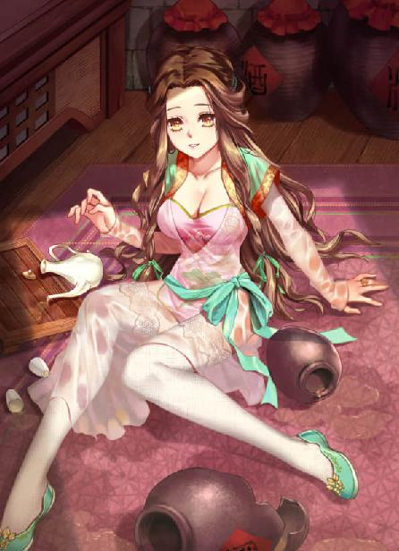
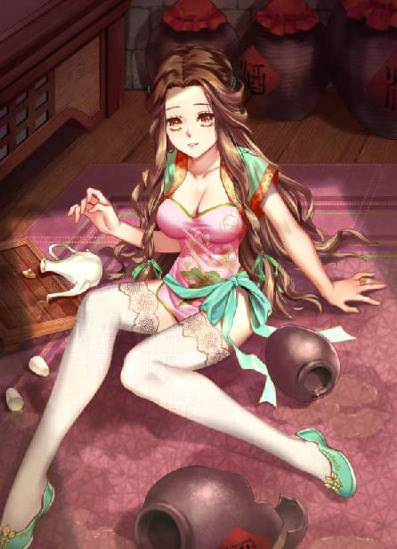
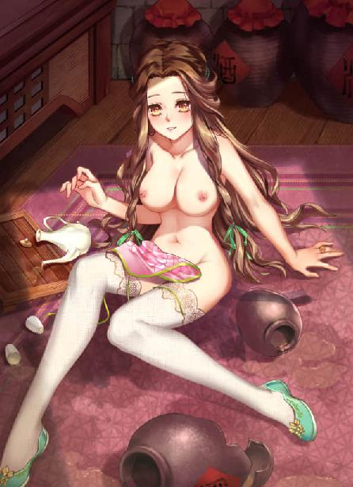

第75集·群芳尽染
汉国篇（27/28）
出版日期：2018-11-03
【本集内容简介】
大婚之夜，新娘如瑶犹在运筹算帐。程宗扬拿起账册：奇怪，云家送来的嫁妆，都是双份……
洞房烛影摇红，姑姑侄女双飞，程宗扬讨债成功，终于放下一件心头大事。
本想入宫去偷窥合德沐浴，顺便温存一番，谁知阴差阳错之下，程宗扬居然——插错了洞！
※ ※ ※ ※ ※

封面人物：云如瑶

封面人物：云如瑶（内衣版）

封面人物：云如瑶（限制版）
舞阳侯敬酒之后，婚宴才步入高潮。贵族间的饮宴从来都不是单纯的酒食歌舞而已，方今天子驾崩，叛党作乱，朝野人心惶惶，许多人都急于打听消息，但私下会晤不仅效率低下，而且还要冒着私下串连的风险，说不定哪天被人揪住，就是一项罪名。
舞阳侯选在这个余波未息的微妙关头，以皇后赐婚的名义高调成亲，不仅向外界释放出一个鲜明的信号，同时也给了大家一个光明正大会晤的机会。各方心领神会，纷纷以道贺的名义前来赴筵，借机交流信息，确定立场。因此不仅宾客多得出奇，层次也极高，单是王侯的臣僚门客就有数十位之多，远远超过舞阳侯如今应有的地位。
各方宾客借机寻亲会友，席间起坐喧哗，觥筹交错，热闹非凡，一派其乐融融的气氛。
不过其中也不是没有杂音，一名士人便语带嘲讽地说道：“父在观其志，父没观其行。三年无改于父之道，可谓孝矣——新君还未登基，就废了算缗限田诸令，何其匆忙！”
“得了吧。”座中当场就有人不买他的账，一名世家子弟哂道：“合着你们庆家以礼学传世，算缗令算不到你家头上是吧？这么遵礼重孝，你干嘛来呢？有本事往朱雀门击鼓去啊。”
那名士人紫涨了面皮，指着那世家子弟道：“你……你……小人之心！”
旁边的宾客劝解道：“醉话！醉话！大喜的日子，你们吵吵闹闹成何体统？罚酒一觥！”
汉国以孝治天下，除开国高祖以外，历代天子均以孝为谥号。那边先帝尸骨未寒，这边臣子就大摆筵席，明白人都能品出其中的意味，打着哈哈掩饰过去。
眼看天色已晚，院中却始终未曾掌灯，宾客们暗生疑惑，笑语渐渐停歇。
就在此时，鼓乐齐作，一名其貌不扬的方士迈步登上台阶，吸引了众人的目光。那名方士瘦伶伶的，穿着一袭崭新的青丝法袍，他在殿前站定，单掌竖在身前，向众宾稽首施礼，然后袍袖一展，摆了个九天揽月的姿势，长声喝道：“平山——火法！”
旁边一株丈许高的灯树瞬间光亮大作，数百盏大大小小的银灯同时跃出一团光焰，灯树的枝条上缀着数以万计的金铢，被灯光一映，顿时华光万丈，数不清的金铢流光溢彩，璀璨夺目。
冯源这回可大大地露了次脸，一手精湛的火法，博得满场鼓掌叫好之声。冯大法再接再厉，挥手点亮另一株灯树。可惜他法力不济，这次只点亮了一半。幸好程郑早有准备，匡仲玉举觞而起，高唱道：“昼短苦夜长，何不秉烛游！为乐当及时，何能待来兹？”
趁着匡仲玉举杯劝饮，已经安排在各处的仆人取出备好的火褶，同时点燃灯烛，匡仲玉歌声未落，院中已是灯火通明。头顶高处一排排写着“舞陽侯 程”的灯笼星罗棋布，下方是一盏盏精巧的纱灯、宫灯、八角灯、水晶灯、琉璃灯……每一席另设一支儿臂粗的鲸油红烛，燃烧时香气扑鼻，令人心醉神迷。
“这位舞阳侯，果然豪奢。”
“毕竟是帝王一系，身家不凡……”
有人小声嘀咕道：“受封舞都，不会是以退为进吧？”
“要我说，还是霍大将军有本事，拿一个舞都就把事情办下来了。”
“一味炫财夸富，俗气逼人……”
“兄台以为，程侯是求田问舍好呢？还是礼贤下士好呢？”
“若是礼贤下士，只怕洛都城中，多少人连觉都睡不着吧？”
席间一片窃窃私语。忽然旁边一阵大笑，却是那名兰台典校过来敬酒，在席间说了个笑话，引得一众宾客开怀不已。
作为新晋封侯，舞阳侯逐席敬酒已经算是降尊纡贵，再出来与宾客们同席共饮，恐怕正如方才那人说的，过于礼贤下士，反而惹人猜疑。因此程宗扬敬完酒就不再露面，剩下招待宾客、迎来送往之事，都交给一众属下。秦桧、程郑等人都是长袖善舞之辈，长于接人待物，交给他们，自然不用担心出纰漏。
后院一处小亭子内，几个男人正喝得热火朝天。
“剧大哥，我再敬你一杯！”程宗扬道：“你那把刀可是帮我大忙，我都不想还你了。”
剧孟用掌心按着酒觥，头摇得拨浪鼓似的，声音喑哑地说道：“又想骗我的刀？那可没门儿！”
“喝不下就直说。”卢景翻着白眼道：“谁装谁丢人。”
“嘿，你个卢五。我就喝不下了，你怎么着吧？”
石敬瑭爽快地说道：“我替你喝！难得拍剧大侠的马屁，给兄弟个机会！”
“给。”
“你还真给啊？”石敬瑭道：“我挤兑你呢。”
剧孟哂道：“瞧你说的，好像我多要脸似的。”
“替个酒还这么啰嗦，丢人！”赵充国一把夺过酒觥，往嘴巴里一倒，长出了一口气，声震屋宇，然后搁下酒觥，语重心长地说道：“老剧啊，你辈分高，名声响，面子大……”
剧孟一点都不含糊，“那是！”
赵充国立马顺杆往上爬，“你那帮兄弟可都是好样的！好汉子！正经的好汉子！”赵充国竖起大拇指，使劲摇了摇，然后涎着脸道：“那啥，我那边可就缺这等好汉子充场面了……”
卢景道：“打住吧。见墙角就挖。”
“你们别说，”石敬瑭道：“上回老赵还打算挖我的人——你是真不怕挖出一窝马蜂来啊。”
程宗扬道：“你要组军？”
赵充国也不隐瞒，“我估摸着吧，大概要去蓟城。”
“蓟城？”
“金车骑说，北边不大安静，就缺老赵我去坐镇了！”赵充国豪迈地拍了拍胸脯，然后涎着脸道：“一个篱笆三个桩，一个好汉三个帮。老赵我就算是铁做的，全身能打几根钉子？还不得指望哥儿几个帮衬帮衬？”
剧孟用残缺的右手叩着扶手，良久道：“你，我自是信得过的。我那帮兄弟们也该博个前程。可他们散漫惯了，一个个都是脱了笼头的野马，无法无天。军中跟闯江湖不一样，军法无情，我就问你一句：万一他们犯了军纪，你杀还是不杀？”
赵充国拿起一觥自己干了，“我要说不杀，那是蒙你。实话实说：一来，我会把他们当成兄弟，兄弟做事，义字当头，我罩着他们，他们也不该让我为难。二来，我会依着兄弟们的性子安排差事，不喜受拘束的，可以当斥侯。好勇斗狠的，可以当锐士。偷奸耍滑的，去当军法官……”
“哎呦喂，”石敬瑭道：“你还会以毒攻毒呢？”
“我会的多着呢！”
“等会儿——”剧孟道：“我听着这意思，不止一个？”
“起码你得给我五六七八……二十来个吧？还有啊，你得把王孟给我。我早就看中他了。他今儿个没来？”
“他心情不好。老郭不在之后，那小子就整天抱着剑坐在屋脊上发呆。”剧孟道：“这么下去也不是个事，让他跟你去历练历练也好。”
程宗扬酒有些沉了，他一手支颐，两眼朦朦胧胧，眼皮直想打架。
斯明信忽然道：“你去吧。”
程宗扬坐直身体，笑道：“咱们再来一杯！”
赵充国一拍脑袋，“怨我！怨我！扯起来就没边了。春宵一刻值千金，新郎倌，赶紧办你的事儿去，别把正事给耽误了。”
“行啊。”程宗扬也不强撑，“别的我就不说了，回头我让人去蓟城开个铺子。军需上的事，给你帮帮忙。”
“这人情可大了去了！”赵充国感激涕零，“要不我给侯爷磕个头吧。”
程宗扬一下清醒过来，“想得美。磕个头就完了？那是要钱的！”他揉了揉眉心，“这事我还真有点想头，智商。”
“欸！师父！”高智商蹿进来，后面紧跟着狗腿子富安。
程宗扬吩咐道：“你跟班先生说，前两天我跟他说的事，找个时间去跟赵长史好好商量商量。”
高智商一根一根屈着手指，复述道：“班先生，前两天说的事，找赵长史商量——啥事啊？”
“商号的事。”
“知道了。”
“小高不错啊。可惜就是肥了点……”赵充国惋惜地打量高智商好几眼，转头就道：“侯爷，索性你好人做到底，把老班也给我得了。我那边可就缺老班这号能文能武还胆大敢整不要命的人物了。”
“滚！”
笑闹声中，冯源进来道：“程头儿，云三爷准备起身了。”
“我这就去。”程宗扬连忙告辞。
※ ※ ※ ※ ※
云苍峰已经有了七八分酒意，他以兄长的身份送幼妹出嫁，坐的是首席，虽然脚步略有有些踉跄，可笑声依然爽朗，这会儿正拉着程郑的手，絮絮说着自家小妹从小身子孱弱，程郑作为舞阳侯府的家宰，内外诸事还请他多费些心。
程郑频频点头，“云三爷放心。”
“云三哥！”
“你来了。”云苍峰停顿了一下，然后道：“陪我走走吧。”
两人早已熟不拘礼，但今天是正日子，程宗扬老老实实，把姿态放得极低，可云苍峰却像是有些心事，懒懒得提不起兴致。
“云老哥，”程宗扬扶住云苍峰一侧手臂，诚恳地说道：“把如瑶交给我，你尽管放心。有我在，绝不会亏待瑶儿一分半毫！”
云苍峰表情有些古怪地看着他，似乎在说：别的也就罢了，女色上头，你怎么就有脸硬吹呢？他冷哼一声，没好气地说道：“侯爷的意思，往后不打算再娶妻纳妾了？”
程宗扬逞强硬嘘，结果闪了舌头，讪讪地赔笑道：“以前的事是我不对。常言道……不对！有些坏人说：大丈夫三妻四妾。那全都是胡扯！我保证，最多三妻，绝不会四妾！”
云苍峰用食指和中指捻住着胡须，慢慢捋着，淡淡道：“小伙子，话可别说得太满。”
程宗扬道：“以前的事都是不得已，我也不想负了别人。至于以后，就算云老哥不放心我，难道还不放心瑶儿？瑶儿身子虽然弱了些，却有理家之才，有她主持中馈，你就放一万个心好了。”
云苍峰眉头紧锁，一副心事重重的样子，似乎想说什么，最后还是放弃了，只叹息着摇了摇头。
沿途不少宾客向两人道贺，两人频频拱手还礼。一直送到大门处，程宗扬忍不住道：“怎么没见大小姐？”
被外面的寒风一吹，云苍峰剧烈地咳嗽起来。
程宗扬连忙对高智商道：“取碗祛寒的热汤来。”
“我去！我去！”富安作为少爷的狗腿子，赶忙跑去找姜汤。
“就到这里吧。”云苍峰登上马车，顿了一下说道：“三日之后归宁，不必太过铺排。”
“知道了。云老哥，你慢走。”
马车辘辘远去，一直看着云家的车马消失在巷口，程宗扬才转身准备回府。就在这时，他忽然感觉到一丝异样的目光，似乎在有意无意地盯着他。
程宗扬扭头往巷中看了一眼，这条街巷只有襄邑侯和襄城君两处府邸，如果把两头巷口一堵，便是一家，再无外人。此时府中高朋满座，巷中也不遑多让。巷内设了流水席，用来招待宾客们带来的僮仆、随从，过路的客人若是有意，也尽可入席，因此巷中人来人往，热闹非凡。
程宗扬没瞧出什么端倪，只好回府，刚进门就有宾客执酒来贺，随即把此事忘在脑后。
长筵的人群间，一个长相凶狠的光头老汉正逮着一只肥鸡，撒开腮帮大嚼。
“这鸡味道不赖。又肥又烂，嗷！唔唔唔……”老光头一口撕掉半边肥鸡，才满意地呼了口气，堆着笑脸道：“善儿，你也来一口？”
静善没有理会他，木箸挟着一片葵叶，在碟中翻来翻去，却怎么也吃不下。
已死老僧三口两口把肥鸡啃完，顺手将旁席刚上的肘子捞过来，“啪”地一折两段，大口一张，吞下肥肉，顺便连棒骨里的骨髓也吸干净，吐出来时，那截肘骨就跟钢刀刮过一样，光溜溜不见半点肉丝。
已死老僧一边猛吃，一边也没忘了自家宝贝徒儿，尝到好的，就连盆带碟捞过来，堆到静善面前，“赶紧吃，吃完咱们师徒还得持斋呢。阿弥陀佛，善哉善哉。真香……”
静善面前已经放了一堆碗碟，颇为醒目，程宗扬没看见她，只能说巷里的人太多了。老光头行事蛮横霸道，更是引得邻席人人侧目，不过看到他吃喝时的凶相，所有人都选择了明哲保身。吃起来都这么玩命，这是个亡命徒啊。反正酒肉还多的是，不差这一口。
终于静善夹起葵叶，吃了下去，然后起身就走。
“徒儿！”已死老僧口一张，一口肉差点儿喷出来。他麻溜起身，抖开一只羊皮袋，捞起肥牛肥鸡就往里面塞。只见老光头出手如风，活活像是长了八条手臂一般，眨眼工夫就只剩了一堆空盘，在席上滴溜溜地打转。
“等我啊！”老光头背起羊皮口袋就跑，顺路抄起一碗侍者端来的羊羹，往嘴巴里一倒，丢下空碗，一路绝尘地追了出去。
那名侍者怔了半晌，才跳着脚地骂道：“饿痨啊！”
※ ※ ※ ※ ※
程郑道：“云三爷像是有什么心事？”
“我瞧着也像。”程宗扬带着酒意琢磨了一会儿，“聘礼少了？”
程郑苦笑道：“天家娶亲，也就这样了。再说，云三爷也不是这种人。”
聘礼多少云家真不会计较，何况自己以七里坊为聘礼，无论如何也不能算菲薄。会不会和那位已故的云家大爷有关呢？云丹琉在秘境找到父亲的玉佩，肯定会告知云苍峰等人。云三哥多半知道些什么，但大喜的日子，不好开口。
程宗扬倒没有太纠结，以自家如今能够调动的势力而论，如果那个仇家还在汉国，只能说他生错地方了。
几名侍女提着灯笼在前引路。红玉手指冻得发僵，听着后面传来的交谈声，心跳得更是几乎要蹦出喉咙。
她自小在府里长大，因为父母早亡，又乖巧听话，颇得女主人信重，有些私密事情都会交给她打理。不过红玉还是更喜欢待在府里，高墙外面的天地对她而言，就像是另外一个世界。
她还记得那天，外面忽然来了许多杀气腾腾的军汉，叫嚷说府上那位权势无边的主人是叛逆的乱党。然后他们攻进府中，把所有敢反抗的人都杀死了。
红玉不知道主人是不是乱党，她只知道从那天之后，一切就都变了。两位主人再也没有出现，她和府中的仆役都被囚禁起来。直到有一天，一名官员前来宣布，她的主人襄邑侯和女主人襄城君均已畏罪自杀。朝廷恩典，她们这些奴仆没有被当作乱党株连，只是换了新主人，府邸也被改为舞阳侯府。
第一次见到新主人，红玉几乎不敢相信自己的眼睛。这位主人，自己是认识的。她还记得那天女主人看着他身上精壮的肌肉垂涎不已的样子，更忘不了自己的第一次就是被他……
只不过他现在有了新的封号：舞阳侯。更让红玉惊恐的是，自己竟然还见到了因为叛乱而“畏罪自杀”的女主人，虽然她戴上了面纱，换下了华丽的衣饰，甚至连身姿仪态也有些变化，但红玉依然一眼就认出了她。只不过她现在的身份与自己一样，只是一个奴婢。
曾经的奴仆成了高高在上的主人，昔日风光无限的女主人却沦为隐姓埋名的婢女，这样的逆转让红玉感受到莫大的恐惧。连女主人都沦为奴婢，她不敢想象自己一旦被新主人认出，会面临什么样的下场。
主人的声音从身后传来，“怎么没有看到冯子都他们？”
“羽林天军接管了周边的军务，老冯他们几个，整天忙得脚后跟打后脑勺，礼物送来了，人实在到不了。还专门托我给师父告个罪，改天再登门道喜。”
“你明天去找你师娘，从账上支些钱铢，给他们回礼。”
“军营的事交给我，你就放心吧。师父，不是我跟你吹，咱可是正经的将门世家，跟他们打交道，咱懂行啊。”
“行了，逗你的小胡姬去吧。”
“那我先走啦！明儿见！”
高智商乐颠颠地走人，程郑也回去继续招呼宾客。几名侍女引着主人一路来到内院。
沿途张灯结彩，喜气洋洋，红玉在府中生活多年，对院内的一草一木都熟稔无比，可现在却有些陌生。以往府中虽然豪奢，却从未有过这种喜庆的气氛。
两名女子守在内殿前，见主人过来，远远便屈膝拜倒，“恭喜主子。主子大喜。”
“夫人呢？”
阮香琳张开大氅，一边给他披上，一边笑道：“已经入了洞房，正等相公去圆房呢。”
何漪莲对那些侍女道：“你们下去歇息吧。”
“是。”几名侍女应了一声。
红玉提着灯笼，小心退开，腰身忽然一紧，被一条手臂揽住。主人带着一丝笑意道：“你就别走了。”
红玉像是飘在云上一样，不知道自己是怎么被带着进了奥室，穿过甬道，来到隐秘的内宅。等她回过神来，已经来到湖畔那处精巧的暖阁旁。
阁中一片欢声笑语，透过纱帘，能看到里面满眼都是雪肤花貌的丽人，一个个姿容曼妙，如花似玉。有些自己见过，但更多的都是自己未曾见过的美人。
有人唤道：“主人来了。”
那些丽人纷纷跪下，一片莺声燕语，“奴婢见过主子。主子大喜。”
“你们不在里面伺候，怎么都躲在这儿偷懒？”
蛇夫人笑道：“夫人嫌我们咶噪，把我们都打发出来了。”
“头一天就惹夫人不高兴，还有脸笑？”程宗扬一边说一边拾级登楼。
楼上的洞房布置得花团锦簇，云如瑶坐在案旁，一边翻看账本，一边摆弄着象牙算筹。她穿着大红的宫装，头戴珠冠，肩上披着一幅金绣云纹霞帔，这会儿正低着头，神情专注地计算着账目，一双明眸灵动无比。
云如瑶体质柔弱，气血不足，玉颊总少了几分血色，略显苍白。然而此时，被鲜红的嫁衣一映，白玉般的面颊透出柔润的嫣红，显得娇艳无比。
看着云如瑶的侧影，程宗扬只觉一丝喜悦从心底升起，像缭绕的烟雾一样，渐渐充满心头，整个人都暖洋洋的。那是一种温馨而满足的喜悦。自己孑然一身来到这个世界，此时终于有了自己的家和自己的家人。
程宗扬看了半晌，才走过去笑道：“怪不得娘子要把那帮奴婢都赶出去，原来关起门来算账呢。”
“可惜手边只有算筹，及不得算盘顺手。”
程宗扬失笑道：“新婚之夜，新娘子拿个算盘算账，这事可千万不能传扬出去。”
“妾身主理家计，不得不尔。”云如瑶说着抬起眼，展颜一笑，“何况妾身之乐非为钱财，而在计数之趣。”
这个程宗扬倒是知道，云如瑶自小身体孱弱，风一吹就要病倒，常年抱恙，困居斗室，因此计算就成了她唯一的娱乐。而且云如瑶对算学一道极具天份，说是乐在其中也是实情。
他随手拿起账册，“这是礼金？不对！这是你的嫁妆？这么多！”
程宗扬大吃一惊，“云老哥是把家底都给你了吧？怎么全都是双份的？我岂不是要发？”
“有什么好大惊小怪的？”云如瑶收起账本，然后盈盈拜倒，娇声道：“夫君大人辛苦。”
看到云如瑶婀娜的娇态，程宗扬心头一荡，想起两人从相识到成婚的一路波折，不禁好一番感慨，“能把瑶儿娶到手，什么辛苦都值了。”
云如瑶嫣然一笑，“能嫁予夫君，是妾身三生之幸。”
“变得这么彬彬有礼？”程宗扬笑道：“你不会是要和我举案齐眉，相敬如宾吧？”
云如瑶眨了眨眼睛，“不好吗？”
程宗扬坏笑道：“我还想让你上来自己动呢。”
云如瑶俏脸一红，啐道：“没好话。”
她扭身斟了杯茶，然后掀开博山炉的盖子，加了几粒香料，又扶了扶鬓侧，似乎来掩饰自己的羞态。云如瑶外柔内热，闺房之内，一向放得很开，程宗扬没想到自己随口一句戏言，居然会惹得她害羞了，不由觉得有趣。
“这是什么香？”
“帐中香。拿沉香屑加苏合香油、蔷薇水调成。”
程宗扬贴在云如瑶颈侧嗅了嗅，“不过还是没有瑶儿身上的香味好闻。”
云如瑶侧身避开，一边捧起茶盏，“夫君大人请用茶。”
程宗扬接过茶盏喝了一口，忽然想起什么，“咦？雁儿呢？她不是应该跟你一块儿嫁过来的吗？怎么没见她呢？”
有雁儿这个贴身小婢服侍，哪里用得着云如瑶自己动手斟茶添香？
云如瑶幽怨地说道：“洞房花烛夜，夫君心里却只念着雁儿。”
程宗扬失笑道：“你还吃雁儿的醋？当初还是你主动把雁儿叫上床，让她代你服……”
云如瑶捂住他的嘴，“别乱说！”
程宗扬顺势把她打横抱起，摆出一副狰狞的样子，恶狠狠道：“今晚洞房花烛，看本夫君怎么摆布你！嘿嘿，没有雁儿帮忙，瑶儿可要吃苦头了。”
程宗扬把云如瑶往榻上一丢，就要合身扑上。
“不要！”云如瑶双手撑住他胸口，如水的双眸波光闪闪，娇喘着道：“你先告诉我——你是喜欢雁儿，还是更喜欢我？”
“废话！我当然都喜欢！”
“哪个更多一点？”
程宗扬斩钉截铁地说道：“一样多！”
“骗人！”云如瑶眼珠转了转，“你说，是不是喜欢我更多一点？”
“当然了。”程宗扬眼都不眨地说道：“瑶儿又聪明又漂亮，还总是能想出一些好玩的花样来。不过嘛……”
程宗扬话锋一转，“雁儿可比你乖多了，尤其是在床上，又乖又听话。
云如瑶笑吟吟道：“那丹琉呢？”
※ ※ ※ ※ ※
程宗扬张口结舌，一下子呆住了。云如瑶与云丹琉，一个是亲姑姑，一个是亲侄女，自己已经与云如瑶有了肌肤之亲，再牵涉到云丹琉，妥妥的不伦之恋。眼看与如瑶婚期在即，他和丹琉都把这事埋在心底，没想到却在洞房合欢之时，被云如瑶当面揭破……
“你……”
看到程宗扬期期艾艾的样子，云如瑶收起笑容，冷着脸将他推开，“难道侯爷敢做不敢当吗？”
程宗扬忽然惊醒过来，一把抓住她的肩膀，低吼道：“丹琉呢？”
云如瑶没想到他丝毫不做辩解，反而追问起丹琉来。她吃了一惊，然后蹙起眉头，发出一声痛叫。
程宗扬连忙撒手，一边急切地说道：“云老哥他们是不是知道了？丹琉呢？她在哪儿？”
程宗扬一边追问，一边在脑中闪过一连串的画面：沉塘、浸猪笼、缢杀、活埋……至亲之间出了这样的丑闻，无论对云家，还是对自己这位新封的舞阳侯，都是致命的打击。万一他们为了掩盖丑事，牺牲掉丹琉……
云如瑶一双明眸深深看着他，“好啊，原来你们真有一腿……敢问侯爷，你现在没有什么要说的吗？”
程宗扬心脏像要炸开一样，两耳嗡嗡作响，喝下的喜酒就像在血管里燃烧一般，奔突涌动。他喃喃道：“千错万错都是我的错……跟丹琉没关系……不行，我要去找云三哥！”
程宗扬爬起来就要往外冲，却被云如瑶扯住衣裳，凄声道：“洞房花烛夜，侯爷莫非要丢下妾身独守空房吗？”
程宗扬身子僵住。
云如瑶搂住他的腰，把脸贴在他背后，“夫君大人，你还没有回答我，你是更喜欢丹琉？还是更喜欢我呢？”
“事到如今，我也没什么好瞒你的。”程宗扬道：“没错，我和丹琉虽无夫妻之名，却已经有了夫妻之实——这不怪她，都是我的错。”
“侯爷一味认错，可是后悔了？”
程宗扬猛地摇头，咬牙道：“你别生气——我知道做下这种勾当，既对不起丹琉，也对不起你，更对不起云老哥他们。但我真的一点都不后悔。如果能够重来，我仍然会要你，也会要丹琉！一个都不放手！”
云如瑶冷冷道：“侯爷好生贪心。”
“也许你不知道，丹琉虽然表现得很坚强，十几岁年纪就敢带着水手出海远洋，可说到底她还是女孩子，需要人来疼爱。她越坚强，就越让人心疼……”
“谁让你心疼了！”
帐后传来一个气急败坏的声音，接着帷帐被人掀开，一身劲装的云丹琉气恼地按着刀柄，俏脸涨得通红，“难道在你眼里，我就那么可怜吗？”
程宗扬张大嘴巴，看着突然出现的云丹琉。
云如瑶刚才还满脸幽怨，转瞬间就云散雨霁，她掩口笑道：“傻丫头，你怎么这么快就出来了？我还想多听夫君说几句让人脸红心跳的酸话呢。”
云丹琉跺脚道：“姑姑！”
“好了夫君大人。”云如瑶双手按着程宗扬的肩膀，把他按到榻上坐下，柔声笑道：“妾身先向夫君道个不是。倒不是我们故意骗你，实在是丹琉这丫头不听话，才只好出此下策。”
程宗扬呆若木鸡地看看丹琉，又看看瑶儿，怔怔道：“到底是怎么回事？她怎么……”
“要怪都得怪夫君大人封了舞阳侯。”云如瑶道：“夫君身为诸侯，我们云家嫁女，按礼法当以娣侄为媵。妾身没有妹妹，侄女也只有丹琉一个。所以哥哥们商量，以丹琉陪媵，随妾身一同出嫁。”
云如瑶笑道：“那嫁妆不光有妾身的，还有丹琉的呢。”
程宗扬倒是听说过妻媵制。六朝中的秦国、汉国，包括昭南，都有类似的婚姻模式。简单来说，就是生产力不发达，远嫁的女子往往会因为生活环境变化，或者生育而夭亡。平常人家倒也罢了，但对于诸侯来说，两姓婚姻往往关系到诸侯间的合纵连横，乃至两国的兴衰存亡，不可不慎，因此妻媵制就应运而生。嫁女的一方以新娘的妹妹、侄女随嫁，甚至同姓诸侯也会遣女陪媵。
媵属于明媒正娶，地位远在妾之上。一旦正妻亡逝，媵就可以扶为正妻，继续双方的联姻，不至于使两姓的姻亲关系生变。昭南甚至还有诸侯一聘九女的规矩：诸侯一次娶九女，以后便不再娶亲。
汉国妻媵制不如秦国与昭南盛行，但贵族娶亲，女方陪媵也是常规。通常以正妻的妹妹、侄女为媵，其次以同宗女子为媵，有些不太讲究的，干脆就用婢女为媵。
程宗扬当时也就是听个新鲜，毕竟那是诸侯的规矩，跟自己压根儿不沾边。可是没想到，自己突然间也成了诸侯，云家竟然按规矩嫁女陪媵，把云丹琉一并送了来。
程宗扬闭上眼睛想了一会儿，然后一拍大腿，“这么好的事！为什么不早点告诉我！”
“因为丹琉不愿意啊。”
程宗扬愕然道：“为什么？”
云丹琉啐道：“因为你想得美！”
“好啦丹琉。”云如瑶拉住云丹琉的手，笑道：“你没看到夫君大人方才着急的样子。我还没见过他急成那样呢，横眉瞪眼的，像是以为你有什么不妥当，要去找哥哥们拼命呢。”
程宗扬讪笑道：“是我想歪了。难怪云五哥一脸的不高兴，云三哥也心事重重的样子……哈哈，还真是便宜我了！”
“夫君大人也不要得了便宜卖乖。”云如瑶道：“哥哥们是怕你欺负我，才委屈了丹琉。莫以为我们云家强买强卖，偏要送女上门，反而看轻了我们。”
妻媵制其实是为了保护女方家族的利益，但对于程宗扬来说，完全是想也想不到的意外之喜。他情不自禁地咧开嘴巴，“开什么玩笑！我喜欢还喜欢不过来呢！”
云如瑶揽住云丹琉的腰，“夫君大人刚才说的，你可都听见了，如今你可愿意？”
“谁知道他说的是真的还是假的？”云丹琉狠狠白了程宗扬一眼，没好气地说道：“这个小人，最会撒谎骗人！”
“就是，”云如瑶顺着她的话头道：“连姑姑也被他骗了呢。丹琉，姑姑身子弱，你可要多帮帮姑姑。”
云丹琉脸上一红，露出一丝羞窘。
云如瑶笑着唤道：“雁儿。”
一名明艳的俏婢掀帘而入，她梳着双鬟，手上托着一只蒙着红布的托盘。
云如瑶掀开红布，露出里面一顶珠冠和一袭金丝织纹的大红嫁衣，轻笑道：“丹琉，该换嫁衣了。”
被烛光一映，崭新的嫁衣鲜红夺目，金线绣出的云纹散发出耀眼的光泽，上面的珠冠流光溢彩，让云丹琉一时间看得有些痴了，拒绝的话到了嘴边，却怎么也吐不出口。
云如瑶亲手捧起珠冠，踮起脚尖替云丹琉戴上。云丹琉玉脸飞红，却没有避开。但等云如瑶拿起嫁衣，她偏又不肯穿。
“大喜的日子，你总不能穿着一身武士服拜堂成亲吧？”云如瑶一边劝说，一边悄悄给程宗扬使了个眼色。
程宗扬心领神会，“我来帮你！”一边说一边伸手去拿嫁衣，却指锋一转，飞快地点了云丹琉几处穴道。
云丹琉正心如鹿撞，谁知会着了两人的道。“你们！”她叫了一声，身子软软倒下。
程宗扬把云丹琉打横抱了起来，“你姑姑刚才都说了，云大小姐从小就不听话。”他一边说，一边把云丹琉放到榻上，左右端详一下，满意地说道：“这样才乖嘛。”
云丹琉又羞又恼，“把我放开！”
“那可不行。”云如瑶笑道：“万一你跑了，姑姑可追不上你。”
程宗扬一挥手，“来！一起帮大小姐换嫁衣！”
两人一起上手，嘻笑着帮云丹琉除去外衣。云丹琉里面还穿着银甲，可惜有程小人这个叛徒，那件刀箭难伤的银甲丝毫不成障碍，被他手指一划便即分开。接着云如瑶灵巧地解开她的衣带，将她贴身的小衣也一并剥去。
“不要……不要……停手……”
“有什么好害羞的？”云如瑶道：“我们小时候天天在一起，食则同席，睡则同寝，浴则同池……好啦，姑姑知道你害羞，这就帮你穿上。”
云如瑶给身无寸缕的云丹琉套上嫁衣，却没有系带，而是就那么敞着。修长白润的胴体掩在鲜红的嫁衣间，就像无瑕的美玉一样，分外艳丽。
“丹琉的身子好漂亮。”云如瑶用羡慕的口气赞叹道：“胸乳这么丰满，比姑姑还要大呢。还有腿，又白又长……夫君大人，你来看，奴家的小侄女是不是很美？”
“姑姑……”云丹琉羞得几乎要哭出来。
“丹琉什么都好，就是在床笫间拘紧了些。”
云如瑶俯下螓首，亲昵地蹭了蹭云丹琉的鼻尖，娇声道：“我的小侄女，还不解风情呢……哎呀！”
云如瑶一声低叫，却是被程宗扬从后扯开衣带。
“你仗着正妻的身份，这么戏弄丹琉，我可看不过眼！”程宗扬义正辞严地说道：“乖乖躺好，让夫君大人也来戏弄戏弄你！”
“不好了，丹琉。”云如瑶哀声道：“夫君大人要一块儿弄我们姑侄，说不定还要比较我们的奶子和小穴，羞死人了……这可怎么办？”
“姑姑……”
“这个主意很好啊。你们姑侄来比一比，”程宗扬笑道：“输的人可是要打屁股的。”
“夫君大人不要打我。”云如瑶央求道：“奴家自己脱。”
云如瑶委屈地分开嫁衣，双手绕到背后，解开抹胸，露出脂玉般柔润的酥胸。
烛影摇红，纱帐内，姑侄两人并肩而卧，娇艳的面庞宛如一对并蒂莲花。她们容貌有六七分相似，虽是姑侄，云如瑶却显得更为娇嫩，倒更像一个娇滴滴的小妹妹。不过论神态，云如瑶眉眼含笑，比起云丹琉的羞窘要自如得多。
左边的姑姑身材娇小，体态匀称，纤眉樱唇，一双雪乳圆鼓鼓耸起，还带着几分尚未完全成熟的稚嫩。右边的侄女面带英气，双乳丰满圆硕，身体修长，洋溢着少女的青春气息。
“果然是侄女的更大一点。”程宗扬笑道：“姑姑是盈盈一握，侄女的……一只手可握不住。”
“程小人，你放手！”
“不能叫小人，要叫大人。”程宗扬哄道：“叫夫君大人，我就放手。”
云丹琉倔强地扭过脸，死也不肯向这个卑鄙小人屈服。
程宗扬一手一个握住两女的酥乳，用指尖拨弄着两女的乳头。云丹琉紧紧闭着眼睛，鼻中发出细细的喘息。云如瑶星眸如丝，樱唇微微张开，吐出丁香般的舌尖，充满诱惑地在唇边轻轻舔舐。
左边的手感柔软滑腻，右边的手感饱满坚挺、弹性十足。随着程宗扬两手的揉弄，云丹琉身子很快就热了起来，云如瑶虽然乳头发硬，肌肤却还有些微凉，只是乳头的颜色比侄女更深一些，红如玛瑙。
“夫君大人。”云如瑶哀声道：“奴家奶子虽然不及丹琉的大，但求夫君大人开恩，千万不要把奴家和丹琉的奶头绑在一起……”
程宗扬吹了声口哨，“雁儿，拿丝带来！”
云丹琉尖叫道：“程小人！你敢！”
“丹琉，不要叫了。”云如瑶楚楚可怜地说道：“要是被别人听到，可怎生是好？”
“姑姑！”
雁儿红着脸递来一条丝带。
“给我，”云如瑶笑道：“我来扎个同心结。”
程宗扬捏住两女的乳头并在一起，云如瑶接过丝带，亲手扎了个同心结。
程宗扬赞道：“瑶儿扎的同心结真漂亮。”
云如瑶一边打着花结，一边笑道：“我们姑侄并蒂同心，一心一意服侍夫君大人。”
云丹琉颦着眉头，低低吸了口气。
云如瑶呵哄道：“丹琉不怕，亲一下就不疼了。”
程宗扬毫不客气地张开嘴，将两颗娇嫩红艳的乳头一并含到口中。
当他舌尖从两颗乳头中间滑过，两女身体同时一颤，云丹琉禁不住发出一声低叫。
眼前雪肤生春，触目所及，尽是白腻香滑的乳肉，鼻端满是如兰似麝的少女幽香，如同沉浸在温柔乡中，令人留连忘返。
云如瑶腻声道：“夫君大人，我和丹琉谁美？”
“姑姑有姑姑的美态，侄女有侄女的妙处。”程宗扬笑道：“一对如花似玉的美人儿，春兰秋菊，各擅胜场，哪里分得出高下？”
“骗人，肯定是我的小侄女更美，不信你看。”云如瑶说着，拨开云丹琉的腿缝儿，“是不是很漂亮？”
云丹琉双腿紧紧并在一处，此时被拨开少许，娇美的秘处似露非露，让人血脉贲张。
云如瑶在她耳边小声笑道：“你的小穴被夫君大人看到了。”
云丹琉面红耳赤，苦于手脚被制，动弹不得，只能任他们摆布，这时忍不住反唇相讥，“你不也被他看到了？”
“对哦，我们一起让他看好了。”
“啊！不要……”
云丹琉一双玉腿修长有力，小腿外侧那处伤痕非但没有破坏美感，反而别有一番矫健之态。旁边的姑姑更显娇嫩，雪肤香肌，白滑如脂。程宗扬伸手将云丹琉两腿拉开，另一边云如瑶主动分开双腿，将娇腻的羞处展露出来。两女羞处犹如红莲一瓣，鲜嫩得仿佛要滴下蜜汁来。
云如瑶用指尖分开秘处，娇声道：“夫君大人，妾身的小穴已经剥开了，求夫君大人观赏。”
“瑶儿的小穴好美。”
“瑶儿乖不乖？”
“真乖。”
“姑姑都这么乖，”云如瑶拉起云丹琉的手，“丹琉也要乖乖的。”
云丹琉指尖被姑姑拿着，一直伸到腹下，按住羞处边缘朝两边剥开，露出里面鲜腻动人的蜜肉。
“姑姑！你放手！”
“夫君大人还没有看清楚呢。”
云如瑶将云丹琉手指放好，按紧，让她摆出一个羞人的姿势。
云丹琉身子像火烧一样，整个红了起来。她羞不可遏地闭上眼，娇躯微微颤抖。忽然身下传来一丝异样的触感，云丹琉睁开眼，却发现那只同心结还系在自己乳头上，姑姑那边已经松开。她这会儿正以一个暧昧的姿势俯在自己腿间，饶有兴致地观赏自己的……
“嘘……”云如瑶轻轻嘘了一声，然后嫣然一笑，翘起手指掠了掠发丝，接着俯下身，在她圆润的大腿上轻轻一吻。
云丹琉睁大眼睛，看着云如瑶抬起头，笑吟吟朝她亮了亮舌尖……
“姑姑，不要……啊！”
云如瑶娇嫩的唇瓣贴在少女大腿内侧敏感的肌肤上，一边轻柔地亲吻着，一边往上移去。
云丹琉身子不住战栗，忽然间猛地一颤，她咬住红唇，鼻中发出一声闷哼。
滑腻的舌尖在花瓣间游走着，就像一条顽皮的小鱼，在她最敏感的方寸之地游动，忽而上下挑动，忽而左右拨弄，忽然挑住花蒂，在周围来回打转，忽而传来一股吸力，像是要把她魂魄都吸走一样……
云丹琉呼吸变得越来越急促，脖颈昂起，乳峰上那对娇小的蓓蕾向上翘起，变得又红又硬。
“啾”的一声又滑又腻的轻响，云如瑶唇瓣松开，笑吟吟抬起头，“好娇媚的女儿香。”
云丹琉脸颊红得像苹果一样，紧紧咬住红唇，不敢作声。
云如瑶柔软的娇躯贴在她赤裸的肌肤上，像蛇一样蜿蜒滑动，一直爬到她面前，与她四目相对。
“闺房之乐的妙处，便在于百无禁忌。”云如瑶娇声道：“乖乖的小侄女，姑姑教你怎么享受身为女子的乐趣……”
云如瑶将嫁衣下摆拉到腰间，露出如雪的美臀，“夫君大人，瑶儿的花儿已经开了，等着夫君播云弄雨……”
程宗扬早已按捺不住，俯下身，腰身一耸，阳具直直顶入云如瑶穴中。
“哦……”
云如瑶发出一声蚀骨销魂的媚叫，那声音在耳间回荡着，缠绵不已，使得云丹琉一颗心几乎跳出腔子。她紧紧闭着眼睛，听着耳畔传来的娇呻，感受着身上传来的阵阵颤动，不由地心如乱麻。这种举动简直荒淫得无以复加，可同样的，这种举动有多荒淫，那种打破所有禁忌的震撼感就有多强烈。
雁儿在旁看得面红耳赤，悄悄放下纱帐，想要退开，却被程宗扬一把拉住，“你可不能走。”
“老爷……”
云如瑶笑道：“这床榻再多两个人也尽够了。今晚你就在帐里伺候好了，万一我和你的丹琉夫人不济事，还要靠你救命呢。”
云丹琉心头直跳，几乎没听见他们的交谈。姑姑伏在自己身上，那具雪滑的肉体有节奏地摇曳着，柔腻的乳肉贴在自己乳上，一滑一滑地来回摩擦，系着同心结的乳头被不停揉弄，使她的身体越来越热。
忽然，一股湿暖的香气拂在面上，云丹琉睁开眼睛，却看到姑姑的俏脸紧贴在自己眼前，这会儿露出一副羞耻屈辱的表情。
“丹琉，救救姑姑……”云如瑶哀声道：“有个坏人，正在奸淫姑姑。姑姑的小穴都要被他干穿了……”
云丹琉目瞪口呆，最后气得忍不住笑了出来。
云如瑶湿媚的眼波在她脸上打了个转，然后俯首吻住她的唇瓣。两人乳头贴着乳头，乳房压着乳房，唇齿相接，耳鬓厮磨。另一边，那个姓程的坏蛋正压在姑姑身后，一下一下地挺动着。
“啊呀！”云如瑶低叫一声，松开唇瓣，她眉头颦起，露出吃痛的羞态，娇嗔道：“坏死了……”
云丹琉一头雾水，疑惑间，却听见姑姑贴在她耳边，幽怨地说道：“你的夫君大人，正在干姑姑的后面呢。他的肉棒又粗又大，就像棍子一样，一下一下插着姑姑的屁眼儿……”
云如瑶呵气如兰地说着淫词浪语，看得云丹琉心旌摇曳，忽然身上那具玉体一阵乱颤，却是已经丢了身子。
云如瑶带着一副意醉神迷的神情，低头在她唇上吻了一下，轻笑道：“该你了呢。”
云丹琉还没反应过来，一根火热的肉棒便顶住自己穴口，用力捣入。直到这一刻，云丹琉才意识到自己下体早已一片汪洋，那根坚挺的肉棒笔直捅入体内，毫不停顿地直抵花心。
刹那间，云丹琉灵魂仿佛飞到天上，眼前现出一片七彩的光芒。
不知过了多久，那片光芒渐渐熄灭，耳边传来高亢的叫声。她神智恍惚地想到，姑姑怎么还在叫呢？而且比刚才叫得还要羞人……接着她才发现，那叫声竟然是从自己喉咙里发出来的。
她连忙捂住嘴，然后才发现自己的手臂已经能动了。
姑姑戏谑地张开红唇，学着她的语调“啊啊”叫了两声，笑道：“小侄女，你叫得可好听了。”
云丹琉羞忿地把云如瑶推开，这才看到那个一脸坏笑的大坏蛋。他两手托着自己膝弯，结实的小腹像铁砧一样，一下一下撞在自己股间。
云丹琉挣扎着想把他推开，却看到他肩膀上还缠着绷带，隐约有血迹透出。
程宗扬看到她的视线，故意用嫌弃的口气说道：“缆绳就这么打结的——你以为我是船板啊？连个伤口都扎不好。”
云丹琉恼道：“谁让你不重新包扎！”
“因为是丹琉你包扎的啊，”程宗扬瞬间化身情圣，深情款款地说道：“我舍不得解。”
云丹琉手掌按在他的胸口，被他无赖的模样逗得笑出声来。
她红着脸道：“你们……你们……太羞人了……”
“夫人之相与，俯仰一世。或取诸怀抱，悟言一室之内；或因寄所托，放浪形骸之外……”云如瑶娇声吟道：“虽趣舍万殊，静躁不同，当其欣于所遇，暂得于己，快然自足……”
她站起身，玉手轻分，褪下嫁衣，露出雪玉般的胴体，“闺房之内，裸裎相对，无所不至，与其拘泥礼数，何妨放浪形骸，极尽欢娱？”
看着姑姑坦然裸裎的身子无遮无掩地展现在面前，云丹琉心弦仿佛被突然挑断，紧绷的身体软化下来。紧接着，强烈的快感像潮水般席卷而至，将她彻底吞没。
※ ※ ※ ※ ※
结着薄冰的湖水宛如一面银镜，小紫以一个舒展的姿势惬意地躺在湖畔，身子半浸在水中，脑后枕着一块光滑的圆石。
在她视线正前方，那册《武穆秘籍》悬浮在半空，一只翠绿的萤火虫忙忙碌碌地飞舞着，一边用尾部的萤光照明，一边用机械触爪翻动书页。
书页像是被夜风吹拂一样，一张一张翻过，没有丝毫停顿。小紫星眸半闭，双手搭在胸前，像是睡着一样。
在她身后，卓云君和蛇夫人一左一右盘膝而坐，各自凝神望着翻动的书页。雪雪守在女主人头顶，它一副如临大敌的模样，四条小短腿攀在石上，似乎随时都会跃起。
再往后，蔡敬仲躬着腰，两手垂在身前，脸上带着一丝恰到好处的笑容，既让人觉得满意，又不会令人觉得谄媚得讨厌。直到秘籍翻完，又从头开始翻起，他都纹丝不动，更没有丝毫不耐烦，神情间毕恭毕敬，让人挑不出一丝错处。
秘籍原文有大量的删改痕迹，大片大片的内容被涂抹、划掉，间或夹杂着几句诅咒和充满火药味的谩骂。
大意是原本的功法狗屁不通，根本不可能练成。尤其是神功未成，破体必定殒命的设定，简直是滑天下之大稽，更是普天之下所有男性的公敌！这种反动透顶的功法，必须彻底封杀！不允许一字一句流传于世！
不过念在功法本身尚有可取之处，特别是对女性修行进境有奇效，伟大的武穆王决定亲自出手，对功法进行斧正。
原本的功法虽然行气经脉与寻常功法迥异，但还局限于正常的运功行气的范畴之内，而岳鹏举修改之后，混入大量与魂魄相关的内容，更是屡屡提及上古大巫的秘法。
蛇夫人对巫术一窍不通，看得莫名其妙。卓云君身为太乙真宗教御，博识道法，但武穆王提及的内容同样出人意表。相比之下，倒是得到幽冥宗传承的小紫对此更熟悉一些。
岳鹏举修改的内容越来越多，到后面完全是改弦易辙，通过巫法深入到魂魄层次，绕过功法原本的限制。修改过的功法进展似乎很顺利，岳鹏举用得意的口吻表示，习练者的修为突飞猛进，进境远超预期。
当书册翻到中间，小紫忽然睁开眼睛，寒星般的美眸停在其中一页上。那张书页出奇得干净，原本无处不在的删改痕迹消失不见，但在碧绿的荧光映照下，似乎多了一层古怪的影子，仿佛有一个不为人知的秘密隐藏在阴影最深处。
再往后翻，情况急转直下，文字中出现大段大段的谩骂，言辞之恶毒，语气之愤懑，让人怀疑伟大的武穆王是不是大剂量多批次吞服了好几斤狗屎。
卓云君眉头越皱越紧，脸上露出震惊的神色。小紫眼睛却越来越亮，最后轻轻吐出两个字：“傻瓜。”
蛇夫人目瞪口呆，半晌吸了口凉气，“难道她们都练死了？”
小紫懒洋洋道：“试试就知道了。”
蔡敬仲踏前一步，扑通跪倒在地，叩首道：“奴才愿以身试法！”
蛇夫人横了他一眼，“蔡爷，你有子宫吗？”
蔡敬仲对蛇奴的讥讽置若罔闻，不动声色地说道：“奴才是阉过的，区区子宫，没有也罢！”
卓云君道：“未曾破过身的，唯有雉奴。”
小紫道：“用改过的。”
卓云君与蛇夫人面面相觑，从秘籍上只言片语透露出的线索，不难看出这册功法原本只限于女子，尤其是处子修习，若是破体，极易被功法反噬。岳鹏举对此深恶痛绝，但又对它别走蹊径，能迅速提升修为的好处难以割舍。
岳鹏举虽然没有明言，但从册中的字句判断，他似乎考虑过把自己身边的侍姬组建成一支卫队，为此不惜大费周章，对功法进行删改。修炼的真实结果不得而知，但岳鹏举足以组建成卫队的侍姬突然间烟消云散，似乎能揣摩出一二。
蛇夫人道：“光奴？还是兰奴？”
成光是俘虏，尹馥兰屡次弃主逃生，拿她们两个试练功法，就算死了，也没什么好心痛的。
小紫轻巧地转了个身，碧玉般的鱼尾在水下惊鸿一现，“把义姁叫来吧。”
※ ※ ※ ※ ※
南宫，兰台。
“干活！干活！就知道让我干活！”中行说一边乱骂，一边扔着玉牒。
曹季兴一边捧着手炉取暖，一边拉长了声音，阴恻恻道：“怎么着？老祖宗让你干点活，还这么啰嗦？”
“这么多活，凭什么让我一个人干？”
“帝王宗谱岂是让人随便看的？叫你来，是看得起你。”
“这话你哄别人去吧！你不就是看着刘骜倒了，骑我头上拉屎拉尿？告诉你姓曹的！逼急了，我投胡人去！”
“说啥呢这是？”朱老头背着手，施施然进来。
中行说跪下，梗着脖子道：“姓曹的不干活，还光欺负我！”
“嘿！你个小阉狗！”曹季兴急赤白眼地翻着玉牒，“我这不也干着呢！主子爷，你刚才也听到了，这小兔崽子要投胡人，当汉奸！”
中行说毫不示弱，“都是你逼的！你个老阉狗！”
“甭废话！”朱老头黑着脸道：“找到了吗？”
“快了快了，”曹季兴道：“这册上说不准就有。”
“有个屁。”中行说道：“女子不入牒谱，他尽说瞎话。”
“你不早说！”曹季兴扔下玉牒，指着他的鼻子道：“你个小阉狗，故意坑我呢？”
“呸！”中行说丝毫不给他面子，当面啐了他一口，“让你不干活！”
曹季兴扑上去，两人扭打成一团，把玉牒踢得满室都是。
朱老头捂住胸口顺了顺气，然后“咣咣”两脚，把两人踢开，大吼一声：“要死啊！”
“不干了！”中行说爬起来，淌着鼻血道：“我伺候期夫人去！”
曹季兴道：“你小子贼心不死，咋滴？还想复辟啊？”
“我乐意，你管得着吗？”
“瞧你这破嘴，你咋活这么大的？”曹季兴扭头告状，“主子爷，你可都听见了。”
对上这俩活宝，朱老头也是没辙。要不是那个会遁术的小丫头来历成谜，宗谱玉牒又不好让外人过目，他也不会赶鸭子上架，让这两个不着调的家伙来找线索。
“今儿就歇了吧。明儿个接着找——”朱老头虎着脸道：“要是找不出来，我就把你们拎到武皇帝陵里头，一手一个掐巴死俩！刨坑埋喽！”
※ ※ ※ ※ ※
长秋宫内，灯火阑珊。低垂的帘幕下，还未登基的小天子正在熟睡，赵飞燕与赵合德并头躺在一处，絮絮说着姐妹俩之间的私密话。
几位中常侍隐瞒了消息，姐妹俩还不知道自己的家人已经失去音讯，还在商量把阿爹接来，住在何处合适。如今京中诸逆已平，霍子孟与金蜜镝联手迅速稳住局势，赵飞燕总算能在危急之间喘口气。不过姐妹俩说来说去，提及的话头总是绕不开那位舞阳侯。
“他说，会带我去宋国的临安和晋国的建康。还有江州、晴州……”
说起未来的生活，少女目光中露出一丝憧憬，赵飞燕却目带怜悯。她无声地叹了口气，然后搂住妹妹，把下巴放在她头顶。
如果有选择，她宁愿让妹妹嫁一位才学平平的文士，过着平平常常，而又平平安安的日子。
程侯不是坏人，可他的内宠未免太多了些。内宅那些事情，她最清楚不过，以自家妹妹柔顺的性子，只怕受了委屈也不肯说。比如，妹妹一整晚都在说他的事，却对他今日的大婚只字不提。
“他说……”合德终于鼓足勇气，“那位夫人温柔娴淑，不会苛待人的。”
“早知如此，或者立你为正室更好。”赵飞燕道：“云家想必不会争的。”
“不好。”赵合德小声道：“他与那位云小姐已经有婚约的。若是毁约，会让他为难。”
傻妹妹啊……赵飞燕心酸之余，又有一丝淡淡的庆幸。妹妹虽然没有名份，但总算有了归宿。以程侯的为人，想来不会苛待于她。若是能离开汉国，远走他乡，也好早早摆脱这个是非之地。
“临安……是什么样子的？”
“他说，那里有一个大湖，风物绝佳……”
听着妹妹的诉说，赵飞燕闭上眼睛，眼前仿佛浮现出江南水乡丽日晴川、烟柳画桥的旖旎风光。
※ ※ ※ ※ ※
相比于千里之外的江南秀色，舞阳侯府的洞房之内，风光更显旖旎。帐外红烛高烧，帐内暖香四溢，春意融融。程宗扬上身斜靠在榻上，双手搂着云丹琉的腰身。
一向精力充沛的云丹琉此时体软如绵，娇躯无力地伏在夫君身上。她那双白美的大长腿朝两边分开，跨坐在程宗扬腰间，一只又圆又翘，充满弹性的美臀被他捧在手中，上下颠弄。臀间那只娇艳的嫩穴紧紧包裹着肉棒，随着肉棒的进出一收一合，不住淌出淫水。
程宗扬笑道：“服不服？认输我就放你下来。”
“我才……不……不……”云丹琉保持着仅存的一丝清醒，勉强维持着自己最后的尊严。
“丹琉，你这样撑着，好辛苦呢。”云如瑶轻笑着从后拥住倔强的少女，赤裸的娇躯在她肌肤上摩擦着，滑如凝脂，然后张开红唇，含住她通红的耳垂，用舌尖轻轻舔舐着。
云丹琉赤条条被两人夹在中间，从未有过的淫靡经历，使得她意乱神迷，骨酥筋软。
隐约间，她听到姑姑唤了声雁儿，声音又软又甜。
忽然身后一紧，臀肉被人扒开，接着一张柔软的小嘴贴了上来，温软的唇瓣掠过臀沟，在云丹琉惊恐的战栗中，一路向下。
即使被两人夹在中间，云丹琉仍禁不住娇躯剧颤，失声道：“不要！不要碰那里……啊天！”
说话间，那张小嘴吐出娇腻的香舌，在她肛洞上打了个转。
云丹琉弓起身，发出小猫一样的叫声。程宗扬只觉下身一紧，肉棒被蜜穴紧紧夹住，那只柔嫩的花心像受到电击一样，不受抑制地痉挛着收紧。
幸好那香舌只打了个转，便即离开。她臀肉被扒开，沾着口水的肛洞暴露在空气中，传来湿淋淋的凉意。
云丹琉一口气还未喘匀，美目便猛然睁大。一根纤柔的手指像灵巧的小蛇一样探入肛中，往肛洞内游去。
云丹琉的坚守终于崩溃，骑在程小人的身上一泄如注。
这一晚，云丹琉终于体会到什么叫荒淫，什么叫销魂蚀骨。她的泄身非但不是结束，反而是一切的开始。
阴精淋下，那根坚挺的肉棒像吃了仙药一样，瞬间暴胀，棍子一样直挺挺顶住花心。与此同时，肛洞内的手指也变成两根，它们忽而分开，将屁眼儿撑得张开；忽而并在一起，捅入肛洞深处；忽而伸直，在肠道内来回抽送；忽而弯曲，勾住嫩肛旋磨打转。
云丹琉趴在程宗扬身上，柔软的屁眼儿被姑姑搅弄着，蜜穴不停抽动，一波一波地泄着身子。
云丹琉不记得自己的高潮持续了多久，似乎只是一瞬，又似乎持续了漫长的数个昼夜。即使等阳具从阴穴抽离，她仍然没有停止战栗。肉洞仿佛还被阳具塞满，肛中似乎还有手指伸在里面……等云丹琉醒觉过来，赫然发现自己伏在榻上，那根火热的阳具撑开自己的臀肉，硬梆梆顶在肛洞上。
云丹琉心头狂跳，颤声道：“你……你要做什么……”
程宗扬理直气壮地说道：“讨债！”
“什么讨债？”
“赌债！当初我用五虎断门刀破了大小姐的刀法，你可是答应过我，让我用你后面爽一把——这回你可逃不了了！”
“不要……”
“这可由不得你了。”
“不……啊！”
云丹琉一声娇呼，却是两双手同时伸来，扒开她的臀肉，将她的嫩肛暴露出来。
“愿赌服输，”云如瑶笑道：“赖账怎么行呢？”
“大小姐，忍一忍就好了。”雁儿安慰道。
“这里不行的！”
“新婚之夜，总该让咱们夫君大人尝些新鲜。”云如瑶道：“我和雁儿都是被夫君用过的。我们三人六个肉穴，唯独你的后庭还是原封的。今晚洞房，正好让夫君大人给你的后庭花开苞。”
程宗扬挺起腰身，龟头缓慢而又毫不停顿地挤入肛洞，即使云丹琉的后庭经过充分的湿润和摩弄，仍然传来撕裂般的痛意。
云丹琉瞪大眼睛，感受着肛洞被粗大的肉棒一点一点撑开，扩约肌一直拉伸到极限。正当她支持不住的时候，屁眼儿忽然一收，又圆又大的龟头挤过肛蕾，滑入肠道。
云丹琉还没来得及松口气，俏脸就又充满痛意。粗硬的肉棒卡在屁眼儿里，不停往内挤入，带着强烈刺激的异物感，使她觉得自己几乎要失禁一样。
当肉棒全数插入肛洞，云丹琉所感受到的屈辱和羞耻也达到顶峰。她见过那些侍姬用后庭承欢的羞态，可从来没想过自己有一天也会露出屁眼儿，被人用阳具破肛奸弄。
阳具侵入后庭，与插入蜜穴的感受完全不同。起初她感受到的只有强烈的胀痛和难以忍受的异物感。云丹琉以为这已经足够耻辱，但当阳具抽出时，她才感受到什么叫后庭花开。
随着阳具拔出，屁眼儿被带得翻开，连肠道都仿佛暴露出来。一股强烈的便意席卷而至，云丹琉本能地收紧肛肉，却无法阻止阳具分毫动作。阳具一点一点拔出，只剩下坚硬的龟头紧紧卡在肛洞内，云丹琉丝毫不怀疑，龟头一旦拔出，足以摧毁自己最后的矜持，自己绝对会当着众人的面失禁。
云丹琉从来没有像此时一样，期待着他的肉棒插入。就在自己即将崩溃的一刹那，阳具重新捅入，将自己强烈的便意送回到体内深处。
云丹琉低低喘了口气，然后听到旁边两人的笑声。她捂住面孔，心里暗暗发誓，等夫君与她们交欢时，自己也要戏弄她们。
肉棒有节奏地抽送着，出入之际越来越顺畅，肛洞的胀痛感渐渐被一种异样的亲密感所代替。那是一种破除所有禁忌，裸裎相对的亲密，彼此再没有任何隐私和秘密的交融与欢好。
云如瑶和雁儿一人一边，将云丹琉臀肉扒得敞开，露出那只柔嫩的肉孔。云丹琉怎么也没想到，自己的新婚之夜，居然会被自己的丈夫破肛，还是在姑姑的协助下，让夫君采撷了自己的后庭花。
程宗扬也大感不虚此行，云大小姐的后庭又紧又暖，抽送时快感十足。尤其是她吃痛时，屁眼儿收缩得分外有力，就像一只小手紧紧握住阳具，传来阵阵紧致而又绵密的销魂快感。
云丹琉伏在榻上，感受着自己最后的处女地被夫君嚣张的阳具大力侵入，任由他在自己最羞耻的部位打下烙印，留下他的气味、温度、体液……
是的，那个坏蛋竟然在自己屁眼儿里射精了。感受着臀后火辣辣的痛意和屁眼儿里流淌出的黏稠与湿滑，云丹琉把脸埋在枕头中，羞得抬不起头来。
淫靡的娇呼声在耳边响起，云丹琉勉强转过头，只见姑姑被剥得像只白羊一样，趴在榻上，翘着雪嫩的美臀，敞露着蜜穴，被程小人干得淫液横流。
“不……不行了……”云如瑶颤声唤道：“雁儿，快来……”
雁儿乖乖爬过去，按照男主人的吩咐，伸手剥开夫人的臀肉，露出里面小巧的肛洞。紧接着，那根沾满淫水的大肉棒从蜜穴脱出，如同巨蟒一样猛然贯入屁眼儿。
云丹琉感同身受地浑身一颤，姑姑却发出一声媚叫，那条巨蟒只微微一顿，便挤入嫩肛。
“夫君大人，饶了我吧。”云如瑶颦着眉头哀求道：“贱妾……贱妾……要泄身了……喔……”
红烛摇曳，光影变幻。榻上已经换了雁儿，这名用一斛珍珠从石超手中换来的俏婢将一只枕头垫在臀下，乖乖敞露出娇嫩光洁的美穴，被主人插弄。两位夫人与她并肩躺在一处，同样把枕头垫在臀下，露出蜜穴，被夫君把玩。
片刻后，云丹琉被换到中间，可惜她已经连番泄身，没几下就承受不住。再换上云如瑶梅开二度，这位姑姑倒是比侄女支撑得更久一些。
三女轮流服侍，直到长夜过半，才尽欢而止。无论云如瑶、云丹琉，还是雁儿，此时都已经精疲力竭，倒是程宗扬数度喷射之后，仍然意犹未尽，阳具轻轻一碰，便又坚挺如故。眼看三女疲不能支，他克制住提枪再战的冲动，将姑侄二人一左一右搂在臂间，几人肢体交叠，彼此搂抱着沉沉睡去。
※ ※ ※ ※ ※
“恭喜老爷，恭喜夫人。”
随着一声娇唤，帷帐拉开，阳光透过绿色的玻璃，落在榻上。
程宗扬睁开眼睛，只见云如瑶已经起身，这会儿正坐在梳妆台前，由雁儿服侍着梳理长发，云丹琉却还在身旁熟睡。
何漪莲笑道：“小夫人昨晚太累了，这会儿还没醒呢。”
云如瑶笑道：“她是不好意思，这会儿在装睡呢。”
云丹琉玉颊立刻红了，她带着一丝羞恼坐起身，随即发出一声痛呼。
云如瑶关切地说道：“丹琉，你刚开过的苞，可要小心身子。”
“姑姑！”
程宗扬大笑着把云丹琉搂在怀里，“好了瑶儿，丹琉脸皮薄，你就别再逗她了。”
红玉端起银盆，举过头顶。何漪莲拧了条帕子，一边帮主人抹洗，一边道：“这丫头倒是乖巧，主子看留她在哪里使唤？”
程宗扬道：“这你该问夫人。”
“起来吧。”云如瑶把红玉唤过去，问了她的出身来历，得知她已经被夫君收用过，白了自家夫君一眼，“就留在屋内使唤好了，也好给雁儿分劳。”
红玉叩首谢过女主人，只是心下仍难免忐忑。
云丹琉还有些害羞，云如瑶已经开始适应主妇的身份，等妆扮停当，与夫君一同携手下楼。
楼下早已摆好早点。一顿早餐，并没有钟鸣鼎食的豪奢，但颇为精致，不过席侧只有小紫一人，倒是蔡敬仲垂手立在后面。
“瑶姐姐。”
“紫妹妹。”
云如瑶与小紫手拉着手，说起了悄悄话。
程宗扬有些纳闷，“其他人呢？”
“忙着呢。”蔡敬仲冷着脸，一副懒得跟他废话的模样。不过等小紫和云如瑶说完话，他立刻上前一步，满脸笑容地伸出手，虚扶住紫妈妈的手臂。那副殷勤的劲头让程宗扬看得脑门直冒火——这孙子也太看人下菜碟了！
不知为何，云如瑶眉眼间似乎多了一丝淡淡的忧色，她问道：“侯爷今日的日程是如何安排的？”
这话要是程宗扬问的，蔡爷多半只当没听见，但女主人发话，他立刻说道：“原本该是入宫谢恩的，不过宫里昨日过来传话，皇后凤体不豫，已经免了。”
“不豫？”程宗扬想起徐璜带来的消息，到底有些放心不下，“我还是去一趟吧。”
小紫翘起唇角，“我也要去。”
蔡敬仲躬身道：“奴才给主子带路。”
程宗扬强忍着，没把那个“滚”字吐出来。他把银匙往碟里一丢，“我已经决定了，不回江州了！”
蔡敬仲对江州执念深重，当初为了能早些去江州，甚至不惜矫诏给自家主公定上死罪。可这会儿他对程宗扬的威胁无动于衷，只持箸殷勤给云如瑶布菜，好像一个字都没听见。
程宗扬道：“蔡爷，你没听到？我说——不去江州了。”
“听见了，听见了。不去就不去。夫人，这是宫里御厨精制的麋子肉，滋味非比寻常，您尝一口。”
程宗扬奇道：“实验室你不要了？”
“实验室？”云如瑶道：“蔡公子，是你上次说的那个吗？”
“可不是嘛。”蔡敬仲脸笑得跟一朵花似的，“奴才照夫人的吩咐，已经派人去圈好了地，就等着大兴土木了。”
云如瑶笑着对程宗扬说道：“夫君大人兴许还不知道，蔡公子自己解囊，在舞都城北选了一处荒地，要建一处实验室。为此还专门知会了妾身。”
程宗扬明白过来，怪不得蔡爷突然变脸呢，原来是走通了女主人的门路，毫不犹豫就把自己弃若敝屣。拿江州威胁他根本没用，人家早就改主意了，用不着再千里迢迢前往江州，把实验室放在舞都，又方便又省事。
云如瑶眨了下眼睛，“妾身的处置是否不妥当？”
新婚燕尔，这点面子总是要给的，程宗扬挤出一丝笑容，“妥当！就这么决定了！”
好不容易吃完饭，程宗扬与小紫一同出门，蔡敬仲像没事人一样跟了上来。
程宗扬没好气地说道：“行啊，蔡爷，够会钻营的。瑶儿刚来，你就巴结上了。不过你再巴结她，也不能不把我放在眼里吧？别忘了，你的实验室可是在我的地头上，我一个不高兴……”
蔡敬仲打断他，“今儿几月了？”
“嗯？”
蔡敬仲屈起手指，“八月间你说要给我建一所实验室，我信了；九月你说办完事就走，行啊，你的事要紧嘛；十月间你说下个月就走，赶在年前把实验室建起来，我信了你的邪；结果到了十一月，你说走不了——我是看出来了，你压根儿就没打算给我建实验室对吧？”
被蔡敬仲一连串地质问下来，程宗扬脸上居然有一丝火辣辣的感觉，他都有点不敢相信，自己脸红了？
“蔡爷，那个……”
蔡敬仲没有搭理他，转身面对着小紫，带着一丝哽咽道：“奴才……心里委屈啊……”
※ ※ ※ ※ ※
程宗扬坐在车上，像斗败的公鸡一样垂头丧气。自己在那个死太监手里从来就没讨过好，这回也是一样。本来向他兴师问罪，结果反过来赔礼认错不说，还被迫答应把拨付的实验经费大幅增加，又附加了一大串的优先权，来保证实验室的运行。这要是签的条约，自己妥妥就是丧权辱国的败类。
“有两个好消息和两个坏消息，你想听哪个？”
程宗扬打起精神，“什么好消息？”
“第一个好消息呢，那本秘籍里面的功法很厉害。一来进境极速，修行一年可抵寻常功法三五年，二来可以改善体质，美容养颜，青春永驻不是梦哦。”
“这么厉害？我听着怎么有点不信呢？”程宗扬摸着下巴琢磨了一下，“坏消息呢？”
“坏消息是这门功法只能由女子修习，而且需得是处子。如果在练成之前破体，则会遭受功法反噬，必死无疑。”
“干！那还练个屁啊！”程宗扬狐疑地看了她一眼，“你不会想练吧？我可警告你，绝对不许练这种鬼东西！大爷正打算弄点药，把你麻翻了，好给你开苞呢。”
“人家才不怕呢。”小紫抱着他的手臂，笑吟吟道：“还有一个好消息，那本秘籍被武穆王修改过，改过的功法不怕破体，据说效果很显著呢。”
这就有点意思了。自己身边这些侍奴，除了一个卓美人儿算得上出类拔萃，其余只能说过得去。如果能让她们大幅提升修为，不说全部都达到卓美人儿的水准，就算只有三五个，自己的实力也会有一个爆炸式的提升。
“你准备让谁练这本秘籍？”
“义姁啊。”
这个答案出乎程宗扬的意料，“我还以为你会让太后娘娘去练呢。”
小紫笑道：“大笨瓜，你舍得吗？”
“这有什么不舍得的？”程宗扬道：“不是说不会死吗？”
“可是还有一个坏消息呢，”小紫道：“秘籍最要紧的部分下过禁制，暂时还打不开。”
“所以你就让义姁练着试试？”程宗扬道：“她要练不过去呢？”
“那就死呗。”
程宗扬无话可说。这压根就是草菅人命，不过这个义姁确实不好处理，自己没打算把她收房，可她涉及的机密太多，又不好放走。
“万一她真练成了呢？”
“那就扒了武穆王的坟好了，让他骗人。”
程宗扬放声大笑，伸手揉了揉小紫的脑袋，“死丫头，你是故意逗我开心的吧？放心吧，我没那么生气。蔡爷那脸是臭了点儿，不过真说起来，我确实有些对不住他。光给他画了个大饼，就拖了他好几个月，也难怪他着急。不过蔡爷这夫人路线玩得真精啊，瑶儿刚嫁过来，他就打通关节，圈了一片地下来，动作够快的。”
小紫笑吟吟道：“我要是告诉你，你封侯的诏书还没下来，他就让人去圈地了呢？前几天他还专门找我说，实验室已经开始建了。”
程宗扬怔了半晌，“这家伙连瑶儿也骗？”
“算不得是骗，只是做得早了些，说得晚了些。”
“这死太监，亏我刚才还内疚呢！”
程宗扬回过神来，不禁扼腕叹息：自己还是对蔡爷卑劣的人性认识不足，太大意了，这孙子竟然还会卖惨……
※ ※ ※ ※ ※
吕巨君、刘建、董卓等叛逆的首级尚悬挂在宫阙之下，任由风吹雪打。入宫之后，小紫与蔡敬仲先行一步，前往昭阳宫。
程宗扬知道她在找那枚龙槎星辰，也问过她干嘛找那东西，但死丫头只说拿来好玩。
汉宫那枚龙槎星辰据信是被天子赏赐给了友通期，但友通期无法开口，身上找过也没有。作为眼下唯一的线索，很可能遗落在昭阳宫内。不过昭阳宫屡经兵戈，连宫殿都差点被烧了，如今能找到的可能性微乎其微。
马车在长秋宫外停下，徐璜与唐衡都在宫中，闻讯出来迎接。
程宗扬笑道：“看两位印堂发亮，鸿运当头——怕是宫里的赏赐已经发下来了吧？”
徐璜眉开眼笑，“托侯爷的福，已经发了，如今宫里上上下下，都在感念娘娘的恩德呢。”
叛乱平定之后，各方论功行赏。有人提议给单超、徐璜、唐衡等人封侯，被霍子孟给压下来了。三人官职未变，仍是中常侍，赏赐却极为丰厚，每人拿到的金铢都以万计——长秋宫发下的赏赐都是从程氏商会走的账，程宗扬对此一清二楚。
程宗扬笑道：“恭喜两位。恭喜，恭喜！”
“我们拿的都是卖命钱。哪儿比得了那一位——”徐璜两手食指一横一竖，比了个“十”字，“单是宫里，他捞走的起码就是这个数。”
“有这么多？”
“何止啊！我这还是往小里说的。”徐璜压低声音，“宫里死了那么多人，好家伙，入殓时候一翻，身上差不多都有他打的欠条。这下好了，一多半债主都没了，白拿啊！”
看着徐璜一脸的羡慕嫉妒恨，程宗扬也无语了。蔡敬仲诈死的手段骗骗别人还行，哪里能瞒得过借给他钱的债主？何况蔡爷自己也不低调，已经死了的人，整天穿着奇装异服招摇过市，生怕别人认不出来他——那两撇小胡子一点掩饰效果都没有！
徐璜道：“明明都是中常侍，他凭啥呢？”
唐衡截住他的话头，“人死如灯灭。不说了。”
“咋不说了？他还欠我钱呢。”
“那人已经死过了。没这人了——对吧，程侯？”
程宗扬打了个哈哈，果断不接这茬。
刘骜丧期尚未逾月，宫中依然带孝，连小天子也穿着孝服，此时正背对着宫门，俯身写着什么。
程宗扬走过去笑道：“这么早就做功课？”
小天子转过头来，映入眼帘的却是一张布满皱纹的马脸。他眉毛画成两个墨团，门牙外露，五官扭曲，鼻头又红又大。程宗扬吓了一跳，才认出他是与自己有过一面之缘的孟舍人，宫中用来取乐的弄臣侏儒。
“你居然没死？”
孟舍人又红又圆的鼻子抽了一下，突然间嚎啕大哭起来，一边哭一边在地上打滚，“我不要死！不要死……”
“去去去！”内侍连忙把孟舍人拉开。
徐璜无奈地说道：“天子年幼，在宫里也没个玩伴，倒是见着孟舍人，喜欢得紧。”
宫里来来往往都是大人，唯独孟舍人这个侏儒与天子身高相仿，也难怪天子与他亲近。
“总跟弄臣厮混，不是什么好事。不如招些功臣勋贵家的同龄子弟，入宫陪读好了。”
唐衡犹豫道：“合适吗？”
“怎么不合适？”程宗扬低声道：“这可是拉拢勋贵的好机会。”
唐衡心下会意，“小的明白。”
过了一会儿，他忍不住感叹道：“程侯高义。”
程宗扬微笑道：“过奖了。”
换作别的权臣，巴不得隔绝中外，将天子握在掌心中，想方设法独揽大权。程宗扬却是反其道而行之，先是搞出教育委员会，大量选拔各方人才，提供渠道接触天子，此时又提出让勋贵子弟入宫陪读，各方利益均沾之余，又何尝不是在削弱自己对天子的影响力？
洛都之乱，程宗扬与长秋宫一方毫无疑问是最后的赢家，他肯主动拿出利益与各方分享，难怪唐衡会赞一句高义。
但站在程宗扬的角度，他并没有想这么多，只是本能地认为盟友越多越好，毕竟自己只是个商人，并没有称尚父、加九锡的心思。
内殿静悄悄的，除了惊理和江映秋，连个侍女都见不到，显得颇为冷清。
隔着珠帘，能看到赵飞燕正拿着羹匙，亲手喂小天子喝粥。见程宗扬进来，她放下羹匙，“恭喜程侯。”
程宗扬行礼如仪，然后起身道：“臣子本该与拙荆一同入宫谢恩，但拙荆偶感风寒，无法亲来拜谒，还请殿下恕罪。”
皇后说的凤体不豫，程宗扬说的偶感风寒，都是托辞。真实原因无非是赵合德尚在宫中，找个借口避免会面，以免尴尬。
程宗扬并没有多作打扰，寒暄几句，确定皇后和天子无恙，便即告辞。
惊理领着他来到侧殿，接着帘幕掀开，赵合德乳燕般投入程宗扬怀中，“郎君……”
温香软玉在怀，程宗扬总算能放下心事，“在宫里还好吗？”
“还好。”赵合德道：“我已经告诉了姐姐。她也答应了。”
“只要你不觉得委屈就好。”
姐姐身为皇后，妹妹却只能做妾室，这事千万不能张扬。不然赵飞燕本来就不怎么好的名声又要雪上加霜了。
赵合德扬起脸，“我要跟你回去吗？”
“不想回去？”
“姐姐一个人好孤单。我，”赵合德小声道：“我想陪陪她。”
“这是应该的，”程宗扬道：“你尽管陪她好了。”
赵合德歉然道：“对不起啊。”
程宗扬露出大灰狼般的坏笑，“马上就对得起了……”
赵合德玉脸一下子涨得通红，她刚退开一步，就被程宗扬拦腰抱起。
程宗扬像强盗一样把赵合德扛在肩上，一边叫来惊理，“给我找个没人的地方。”
惊理眼珠一转，“那就去娘娘沐浴的兰汤殿好了。这会儿里面正好空着，一个人都没有。”
兰汤殿位于寝宫之后，由五座大小不一的汤池组成，形如梅花。池体全部用汉白玉砌成，洁白无瑕。此时池水已经排空，池底擦洗得闪闪发亮，却依然香气扑鼻。每座汤池之间都用帷帐和屏风隔开，形成五个相连而又独立的空间，里面除了沐浴用的物品，各种休息用的床榻、锦席、丝被，一应俱全。
程宗扬扛着满面含羞的小美人儿钻到屏风后面，接着便看到衣裳乱飞，有些挂在屏风上面，有些掉落在地。不多时，屏风后面传来阵阵响动，还夹杂着少女细细的娇呼。
惊理与江映秋立在外面，听着里面的动静，都不由脸色泛红。足足等了小半个时辰，里面的动静小了一些，接着传来主人的召唤。惊理应了一声，一边走一边解开衣纽。
屏风后欢声再起，不多时，江映秋也被唤了进去。淫靡的浪叫声从屏风后响起，透过帷帐，在空旷的宫室内回荡着，久久不歇。
良久，程宗扬一身轻松地从屏风后出来，一边吹着口哨，一边对着池旁的铜镜整理衣冠。随着一阵窸窸窣窣的细微响动，赵合德被惊理和江映秋扶携着，出了屏风。她玉颊红晕未褪，双腿软绵绵的，娇弱无力。
旁边的江映秋双手扶着赵合德的手臂，颦着蛾眉，面带羞痛。惊理倒是行止自若，只是美目湿淋淋的，满是媚意。
惊理一边过来帮主子整理衣物，一边小声笑道：“没想到合德妹妹是极品的玉涡呢，那么娇嫩嫩一只小穴，抵得上我们两个。”
赵合德玉颊愈发羞红。
程宗扬笑道：“要不是怕她伤了身子，就该梅开三度了。”
惊理笑着朝江映秋啐了一口，“就你最不中用，连屁眼儿都用上了，也没能让主子尽兴。”
江映秋满面通红，低头道：“姐姐教训得是。”
“不怪江女傅，”赵合德羞怯地说道：“是我不好……”
程宗扬笑道：“你那么乖，有什么不好的？”
“她们都用了后面，只有我没有。”赵合德含羞低下头，声如蚊蚋地说道：“下一次，我后面给你用……”
程宗扬笑着在她唇上亲了一记，“合德前面干起来已经很爽了。”
惊理道：“只怕主子还未曾尽兴，要不要再叫人过来服侍？”
“这边不就你们几个吗？还叫谁？”
惊理低笑道：“这可是皇后娘娘的寝宫……”
程宗扬赶紧看了赵合德一眼，“别胡说！”
惊理掩口笑道：“主子想到哪里去了？奴婢是说，这里离西宫不远，先帝留了那么多嫔妃，不如叫几个过来服侍。再不济，把北宫那些个妃嫔叫来。她们受了主子救命之恩，想报答都来不及呢。只要主子发话，她们自然千肯万肯。”
程宗扬心里狠狠动了一下，又连忙打消了念头，“你们消停些吧。这周围不知道有多少眼睛盯着呢，也就这里好点。”
整个长秋宫此时都冷冷清清。刘吕叛乱，两宫沦为战场，宫人死伤惨重，然后清理叛逆，又下狱了一批，再加上派去给刘骜守灵的，又打发走了一批。剩下所余无几的宫人被单超、徐璜、唐衡等人细细过了几遍筛子，到底放心不下，最后索性遣往他处。因此长秋宫最核心的披香殿，反而成了宫人最稀少的所在。别说躲在汤池偷欢，就算在里面裸奔，也未必能撞见外人。
但披香殿外就难说了，真要把西宫、北宫的妃嫔召来，只怕自己还没爽到，秽乱宫廷的罪名就传得满城都是。
“可是，”赵合德小声道：“你下面还是好硬。我听她们说……”
“用不着担心，不过一点杂气，算个毛。”程宗扬笑道：“以我的本事，用不了几日就能炼化干净。倒是你，能受得住吗？有没有觉得发冷？”
“没有。”赵合德摇了摇头，红着脸道：“你方才射了好多，我肚子里面暖暖的，好舒服。”
“听到了吧，”惊理对江映秋道：“主子赏赐的可是大补之物，最能滋阴润体，你方才承了主子的恩泽，可是天大的福气，好生受用着。”
“行了，你就别逗她了。”程宗扬道：“昨天你当值，没赶上婚庆。等回去拍拍夫人的马屁，好多给你一份赏赐。”
说着，程宗扬搂住赵合德，吻了一口，“再住些日子，就接你回去。”
从长秋宫出来，程宗扬没有去拜访别家，便直接返回舞阳侯府。到了府前，他被门外的阵仗吓了一跳，只见冠盖满路，宾客如云，场面比昨日的婚礼还要热闹几分。
程郑、秦桧、班超周围分别聚了一堆宾客，三人揖来送往，谈笑寒暄，忙得不可开交。
敖润远远看到马车，从人群间挤出来，抹着汗道：“程头儿，正门堵住了，走角门吧。”
“怎么这么多人？”
“这些是没拿到请柬的，今天赶来道贺。”敖润道：“有晋宋等国的使者，各家书院的士人，各方商贾，连临安商会也来了人，打听免税的事……”
略一留意，便能发现各方宾客泾渭分明。围在程郑身边的大都是商贾，他们关心的是舞阳侯宣称在境内免除商税、扶植商业的种种举措；与秦桧打交道的多是官吏，其中最显眼的是晋、宋诸国的使节——各方在洛都都有常驻的使臣，程宗扬为了避嫌，没有邀请各国使节，他们却不肯放过结交新贵的机会，赶在次日前来道贺；与班超周旋的是一帮书院名士，他们目的最明确：凭借己身所学跻身专为天子所设的教育委员会，成为无数士人梦寐以求的帝师。
程宗扬一看这阵仗，就知道正门是走不得了。自己一露面，立刻就会成为众矢之的，一人聊上一句，这一整天都不用干别的了。
好不容易避开宾客，从角门回到府内，程宗扬还没来得及松口气，就看到一大群妇人正由嫂夫人王蕙陪着，浩浩荡荡地前往花厅。这些是各家的内眷，前来拜会新人。她们都是豪门贵妇，一举一动都让人挑不出半点错处，只是不免有些好奇，一介商人之女，为何会受到长秋宫的青睐，成为舞阳侯这位新贵的正夫人。
有内眷在，不好过去打扰，程宗扬索性去了内院，准备找卢景与斯明信两人聊聊。路过一处厢房时，他停下脚步，在门扉上叩了几下，然后排闼而入，朗声笑道：“贾先生身体可好了些？”
贾文和额上缠着白布，脸色青中透白，显得气血不足，他面前的书案上整整齐齐摆放着成堆的简牍。主公进来，他只略微举首示意，然后又继续审阅简牍。
“昨天怎么没见到贾兄？”
贾文和淡淡道：“旧主薨逝，贾某有孝在身，还请见谅。”
天子的丧礼都被人抛到脑后，偏偏还有人给被定为逆贼的旧日主公守孝，听起来都矫情。不过除了贾文和，给郭解服丧的王孟也没有露面，程宗扬也不好指摘什么。
他在书案对面坐下，伸头看了一眼，只见简牍上全是数字，“这是什么？”
“官府历年来的田地、人口、税赋。”
统计的重要性不言而喻，只不过单纯的数字太过枯燥，自己实在没有心思，也没有精力去梳理这些基础数据。程宗扬倒有些好奇一位汉国的谋士，能从这些数字中看出些什么门道来。
“可有什么发现？”
贾文和终于抬起眼，“刘骜前车之鉴，程侯且当谨慎。”
程宗扬笑道：“那可是天子，跟程某有什么可比的？”
“敢问程侯，天子权秉何在？”
“你是说权力的基础？”程宗扬想了想，然后坐直身体，认真说道：“依我看，天子能够掌握权力，根基一方面来自于贵族，包括宗室、外戚、世家，这些世家位于汉国的最顶层，获得他们的支持，就能保证权力的稳定；其次来自于政治架构，包括朝廷的职官、吏员、武将，掌握了朝政，就能保证权力的运行。当然，只有这两者还不够，另一方面在于士人。士人垄断了文化权力，为天子行使权力提供了至关重要的理论基础。三者缺一不可。”
贾文和放下简牍，双手抱膝，仔细看着程宗扬。
“怎么？”程宗扬挑了挑眉毛，“以为我只是个既贪财又好色，无非有点狗屎运的昏庸之辈？”
“程侯过谦了。”
“行了。老贾，你看我说的对吗？”
“程侯此言，对，也不对。时移境迁，如今的汉国已然今非昔比。”贾文和推开简牍，“如今汉国的世家不仅占据大量田地，同时又能入朝为官，并且还不忘治经问学。此事自太后垂帘之初发韧，二十年来，愈演愈烈。如今的世家，已经不仅仅是连阡累陌的地主，而是内治经学，外接诸侯，上至朝堂，下至商行，累世高官，声名远扬，坐郡而守的门阀。”
程宗扬知道，历史上汉国世家作为新兴势力，崛起的势头无可阻挡，由单纯的地方豪族，演变为集地主、官僚、士人，乃至商贾、军阀于一身的门阀，但没想到贾文和能从一堆数字中看出苗头。
“这和刘骜的死有什么关系？”
“程侯不觉得世家所染指的少了一样吗？”
程宗扬琢磨了一下，“外戚？”
“吕氏世称后族，独掌后宫。吕冀何以能在宫中横行无忌？正因后宫妃嫔除吕氏一族以外，皆为寒素。而刘骜偏偏扶立了一名歌姬为皇后。这皇后之位一众勋贵、世家都无从染指，刘骜却要打破常规，帝位安能持久？”
程宗扬皱起眉头，自己原以为将赵飞燕扶上太后之位，便能天下太平，听老贾的意思，好像自己想得简单了。
“程侯今日入宫，敢问观感如何？”
程宗扬脱口道：“冷清！”
“府上呢？”
“车水马龙，宾客盈门。”
“何也？”
程宗扬再也坐不住了，起身踱着步子。对比长秋宫的冷清，舞阳侯府简直热闹得像是拍卖场。要知道自己来到汉国仅仅不过数月，飞身一跃就站上了权力的巅峰，贾文和方才追问天子的权力基础，自己的根基在哪里？
在于朱老头。
自己是站在朱老头的脑门上，才得到汉国上层的普遍默认。但这样的根基并不牢固。刘骜扶立赵飞燕为后，以致身殒，自己扶立赵飞燕成为太后，又会召来多少忌惮和恶意？何况刘骜还是名正言顺的天子，自己只有一个遮遮掩掩的私生子名头——想起这事程宗扬就觉得闹心，天知道外面的谣言传成什么样子了，可自己偏偏还没办法撇清。
程宗扬停下脚步，“先生有以教我？”
贾文和细长的眼睛光泽微闪，“敢问程侯志在何处？”
“我说了你别笑我——我就想当个富家翁，平平安安地做些生意，赚点钱，好好享受生活，不用担什么风险，费什么心思。”
“富贵闲人岂是易得？”贾文和淡淡道：“程侯此志，比起并吞八荒、逐鹿天下也不遑多让。”
程宗扬苦笑道：“还是你理解我。”
“程侯既有此心，唯有以退为进。只是，”贾文和顿了一下，缓缓道：“进难，退亦不易。”
“可不是嘛！”程宗扬几乎要拍大腿了。
直到坐到眼下的位置上，他才知道退一步有多难。这么多宾客纷至沓来，无非因为是自己手中的权力能够给他们提供足够的利益。一旦自己放弃权力，主动退让，趋之若鹜的宾客们只会认为自己在权力斗争中落败失势，眼看着自己这个炙手可热的新贵变成炙熟的肥肉，天知道有多少垂涎三尺之辈赶来要分一杯羹。到时候别说平平安安做生意，死无葬身之地都有可能。这就好比两军相逢，一路高歌猛进便也罢了，一旦出现颓势，局面瞬间就会崩盘。
“由此观之，主上的天子教育委员会，倒是一着好棋。”
自己拿出教育委员会均分利益，纯粹是歪打正着，但也恰恰是因为自己没有独霸天子的野心。也正是因此，才会有这么多人试图与自己合作，而不是敬而远之。
不过程宗扬在意的是贾文和的态度，他在今日的交谈中，头一次称自己为主上。而且更让人奇怪的是，老贾一直怂恿自己拉杆子与汉国对着干，怎么突然之间态度来了个一百八十度的大转弯，鼓动自己以退为进呢？
贾文和似乎看穿了他的心思，双手抱膝，微微仰身，“今秋大旱，霍子孟等人正为此焦头烂额，主上与其临危受命，不如退而守拙。”
这是让自己避事，一旦汉国因为灾情生乱，也好推卸责任——看来汉国的旱灾真是不轻。
汉国家底雄厚，在六朝中首屈一指，府库所藏钱粟堆积如山。但前面刚因为内乱烧了武库，多年积累付之一炬，接着又出现大灾，再厚的家底也经不起这般折腾。
贾文和话说到这个地步，程宗扬下定决心，洛都这个是非窝不能再待了，尽早前往舞都，先把自己的封地拿到手再说。
他拍板道：“把这边的事办完，我就动身去舞都。”
“主上若是要在境中大兴商业，还请邀众同行，好示人以诚。”
这是让自己邀请各方势力一同前往封地，展现出共同开发的诚意。程宗扬笑道：“好主意！多谢先生指点！”
等程宗扬兴冲冲离开，中行说从屏风后面出来，他拢着手，睨视着贾文和，冷笑道：“毒计啊。你是打算拿那些人当人质？你把他给弄走了，皇后呢？让她死在这儿？”
“未雨绸缪而已。”贾文和道：“我倒是想知道，谁会对皇后下手？”
“还能有谁？百足之虫，死而不僵，吕家那帮杂碎少不得要折腾。”提到吕氏，中行说就没好话，他凑到贾文和面前，仔细看着他，“我怎么就没看出来，你这人心思这么狠毒呢？以退为进啊，退到墙角可就出不来了。”
“你看错了。我只想致太平而已。”
“搅得天下大乱，杀得人头滚滚，然后天下太平？”中行说道：“我赌一文钱，你肯定有主意能平掉这些乱子。”
“有。但我不想说。”
“太好了！”中行说抚掌道：“跟我想的一样。顺便告诉你，老蔡也是这么想的。不过他是想趁乱把债主都弄死，再顺手捞点钱。”
“蔡公子素负雅志，非是凡人。”
“提醒你一下，你那点伎俩，小心别被姓秦的看穿了。”
“贾某何尝想瞒过秦会之？彼此意会，便已足矣。”
“好！好！好！”中行说道：“看来大家心思都一样，就等着汉国再大乱一回，最好死个皇后、天子什么的，然后他北上平乱，就该登基做天子了。”
“贾某倒也罢了。倒是阁下，难道也想让程侯当天子？”
“那当然。”中行说贴到贾文和耳边，小声嘀咕几句。
贾文和神情怪异地看着他，“这弯子绕得太大了吧？”
“你就说行不行吧！”
贾文和抱膝思索良久，最后道：“那便祝阁下心想事成了。”
“当然要成！”中行说道：“刘骜虽然没有拿我当朋友，但他不仁，我不能不义。这事儿就这么定了！”
※ ※ ※ ※ ※
程宗扬浑然不知自己手下的谋士、阉奴们正在上下勾结，八方串连，为他能当上天子百般算计。他这会儿满心都想着贾文和方才那番话，贾文和所言虽然不乏危言耸听，但一番言语鞭辟入理，令人闻之如同拨云见日。尤其是以退为进的主张，与自己的心思不谋而合，使他大起知己之感。骤登高位那点隐隐的惶惑和忧虑挥之尽去，整个人都轻松起来。
云如瑶在接待各府来的内眷，程宗扬去找养伤的卢五哥，却遇见哈迷蚩跟阿合马正在给高智商拉筋。兽蛮勇士的修炼从来都是简单粗暴，阿合马踩住高智商的左脚，抡起木杖往他脑后一砸，高智商一头栽倒，本能地迈出右脚支撑身体，这边哈迷蚩勾住他的脚跟一撇。
高智商一声惨叫，大胯跟活活劈开一样，一点过渡都没有，直接一个劈叉一步到位，程宗扬几乎能听到他的睾丸砸在地上，叮当作响。
伴随着高智商的惨嚎，阿合马一边拿木杖在他身上戳着，一边大摇其头，似乎很看不上他的材料。
高智商脸都紫了，他直着喉咙，发出杀猪一样的尖嚎。富安看着心痛，把茶壶递过去，“衙内，喝口水吧。”
“干你娘哦，还喝水……爷的胯……嗷嗷嗷……”
“嗓子都喊劈了。”富安一脸不忍地说道：“衙内，你喝口水润润嗓子，好接着喊。”
“喝个屁哦……嗷嗷嗷……”
阿合马摇着头道：“筋甚硬，骨甚松，朽木哉，朽木矣。”
高智商涕泪交流，干嚎道：“爷就是根儿朽木……放过我吧……”
富安赔着笑脸道：“两位爷，一下劈这么狠，我们衙内遭不住啊。要不，咱们缓缓？”
“要想不疼，吾亦有法。”
富安赶紧道：“阿爷你说。”
阿合马双手握住木杖一抡，比了个虎虎生风的姿势，胸有成竹地说道：“腿打折，再接起来。吾有善药，可保不疼。”
高智商的惨嚎声戛然而止，他含着满眶的眼泪，欣喜地说道：“不疼了！阿爷，我不疼了哎！真的，一点都不疼了！”
“善！再加块砖。”
“别！别！嗷嗷嗷……”
阿合马说的加块砖，是前后都加，两边脚脖子下面，各垫上一块三寸厚的青砖。高智商嚎了两声，嗓子就哑了，他被两个兽蛮老者踩着膝盖，起不来，动不了，就跟砧板上的鱼一样，只剩下垂死挣扎。
程宗扬把求情的话咽回肚里，没敢吱声就悄悄溜了。
卢景在房内养伤，这会儿正趴在榻上，跟没有当值的匡仲玉等人打扑克。奇怪的是，他头顶盖着一张黄裱纸，不知道是什么路数。
匡仲玉和郑宾每人脸都贴着一大片一指宽的黄纸条，输得惨不忍睹。程宗扬进来时，匡仲玉正在洗牌，卢景一迭声地催促，“再来！再来！”
郑宾道：“报告上校！喘好气了吧？盖好了！”
卢景二话不说，把脑袋上的黄裱纸往下一拉，蒙在脸上。只见那张黄裱纸贴在他脑门上方，将他整张脸盖得严严实实，只在眼眶处挖了两个洞，露出两只眼睛。
匡仲玉拈起一条纸片，唾了一口，往卢景脸上一拍，糊住他一只眼睛。
程宗扬惊道：“五哥，你都输成这熊样了？”
卢景口鼻都被黄裱纸糊住，连气都喘不出来，只剩下一只眼睛骨碌碌直转。他飞快地抓起扑克牌，一副速战速决的架式，结果刚出两把，他就陷入沉思，捏着牌半晌没有动静。
程宗扬实在看不过眼，抬手扯掉黄裱纸，“伤着肺呢！还这么玩？”
卢景翻了个白眼，一把捞起黄裱纸，蒙在脸上，然后奋力甩下两张牌。
再然后就没他什么事了，只看着匡仲玉和郑宾你追我赶，斗得不亦乐乎，转眼就把他自己给撂下了。
匡仲玉拿起一张纸条晃了晃，“啪”地扣住卢景脸上仅剩的一个洞，“再输就得脱裤子了！”
卢景一口劲气吐出，将黄裱纸掀到头顶，气势如虹地叫道：“脱就脱！”
程宗扬赶紧按住他，“四哥呢？”
匡仲玉道：“输光跑了。哎，程上校，要不要来几把？”
“来就来！”程宗扬挽起袖子。
“岳帅的规矩，营里不许赌钱，只能贴纸条，一百张小的换张大的，再饶两个洞，再输可就得脱裤子。”
程宗扬笑道：“那我可占便宜了，你们两个脸上这纸条贴的，差不多该换大的了吧？”
※ ※ ※ ※ ※
云丹琉一开始是不好意思见人，装作睡着，结果连日劳心劳力，一旦松懈下来，不由地倦意上涌，不知不觉间就睡熟了。等她醒来，赫然已是傍晚时分，足足睡了一个白天。云丹琉翻了个身，刚抬起手臂想伸个懒腰，忽然一声痛呼，一手按到臀后，一双英气的长眉颦了起来。
“这个坏蛋！”云丹琉泄忿地往被褥上擂了一拳，想起昨晚的荒唐，仍不禁面红耳热。
好不容易起身穿好衣物，云丹琉忍痛下了床，试着走了两步，觉得两腿有些使不上力，只好一手扶着墙壁，往外走去。
云如瑶已经送走女宾，此时坐在屏风前的座榻上，第一次以主妇的身份处理家务。一众侍奴、姬妾，按照身份高低，在榻前整齐列成两排。
她穿着一袭厚厚的狐裘，只露出雪白的面孔和纤细的指尖，看起来就像一件小巧精美的瓷器，精致而又纤弱。但在那些盛妆打扮的侍姬簇拥下，却没有半点局促，神情恬淡自若，尽显身为大妇的风范。
雁儿捧来茶盏，云如瑶浅浅饮了一口，开口道：“紫妹妹原本的规矩条理分明，依我看，就不必动了。只是日子久了，有人尽心，有人不那么尽心，少不得赏功罚过。再加上侯爷收的几个新人，今日就一并处置了。雁儿，你先把原有职份列出来。”
“是。”雁儿拿出一份册页，“内宅现有正妻一位：侯夫人云氏瑶夫人。媵一位：云氏琉夫人。妾一人：阮氏香琳。”
“阮氏是哪个？”
阮香琳上前俯身跪拜，“贱妾拜见夫人。”
云如瑶微微颔首，受了她叩拜，又从头到脚审视了一遍，然后柔声道：“模样还算周正。伺候主子可还尽心？”
阮香琳深深低下头，轻声道：“自是尽心的。”
“侯爷年轻，喜玩闹，你多顺着他些，莫拂了他的意。”
阮香琳应道：“是。”
云如瑶没有叫她起身，也没有让她退下，阮香琳只好原样跪着，听雁儿继续念道：“内宅奴婢共分三等九级，第一等丫鬟两级：主事丫鬟、贴身丫鬟，眼下只有奴婢一人。”
“第二等侍奴三级：侍奴长一人，凝羽姑娘；侍奴三人：蛇奴、惊理、罂粟女。”
“第三等丫头四级：大丫头一人，尹馥兰；丫头空缺；小丫头两人：卓云君卓奴与何漪莲；粗使丫头三人：阮香凝、虞白樱、虞白薇。以上为奴婢，共计十一人。”
“已入门暂无名份者五人：红玉、孙寿、成光、胡情、吕雉。另有已认主未入档一人，不入名册数人。”雁儿叠起册页，躬身道：“请夫人示下。”
“未入档的是谁？”
“泉玉姬，泉奴。”
“不入名册的呢？”
“有娥奴、莺奴、婵姑娘、盈姑娘等人。因不能随侍，未入名册。”
“虞氏两人是哪个？”
“眼下尚失联，不在此处。”
云如瑶点了点头，“尔等平日侍奉夫君大人，便无功劳也有苦劳。如今妾身执掌家政，尔等当一同尽心尽力，服侍侯爷。”
红玉托着一只红漆黑底的托盘进来，盘里盛满各色精美华贵的钗簪、明珠、玉饰，一整副金制的头面，还有一叠印刷精致、质地上佳的纸钞。
雁儿道：“阮氏忠贞勤勉，侍奉主上不避辛苦，夫人着命，赏头面一副，钱钞三百。”
红玉捧起托盘，云如瑶拣起钱钞，递了过去，“琳儿辛苦。”
阮香琳双手接过钱钞，“多谢夫人恩典。”
阮香琳谢恩退下，接下来是三名侍奴，她们每人得到一副钗簪，钱钞更是加到五百。虽然在府中没有多少用钱的地方，但拿到重赏，三人都不免欢喜。
有人欢喜有人愁，尹馥兰作为唯一的大丫头，职份仅次于三名侍奴，别人拿到的都是面值一百金铢的大额纸钞，她拿到的赏赐却是十几枚铜铢，寒酸得无以复加。
云如瑶把钱铢递给她，笑着问道：“知道为何是十九枚吗？”
尹馥兰想了一下，玉脸忽然涨得通红。
“侍奉夫君大人十九次，也算得是苦劳。往后还当更勤勉些。”
“是。”尹馥兰涨红了脸，委屈地答应下来。
再往后的卓云君与何漪莲各得到二百金铢的赏赐。何漪莲同时因为整合洛帮有功，晋升为从侍奴。
何漪莲暗暗松了口气。主人内宅尊卑分明，她原本只是小丫头，与卓云君并肩，此时连跨两级，跻身第二等的侍奴，终于摆脱了最低层的丫头身份。
至于卓云君，她拿到二百金铢的脂粉钱，另外还有二十余枚铜铢，却是卖身的肉价。她以己身恕罪，眼下尚未赎清，仍然淹留于小丫头的职位，也没有什么好抱怨的。
最末的阮香凝一来养护小天子算是功劳，二来受伤颇重，算是苦劳，赏赐三百金铢以外，同样连升两级，由粗使丫头晋升为丫头，位在卓云君之上。
一众姬妾受过赏赐，逐一向主母叩拜谢恩。接下来是五名到洛都之后才纳的新人。红玉服侍主人时，尚是完璧之身，这次受赏为小丫头，与卓云君并列，排名却在卓云君之前。
孙寿、成光、胡情、吕雉四人各得十金，作为主人大婚的赏赐，至于名份，却一无所得，连粗使丫头都没得到。
“尔等四人，有三个都是守寡之妇，还有两个刚死了男人。”云如瑶说着都觉得好笑，“夫君大人就是这点不好，什么阿猫阿狗都往家里收。这要传出去，侯爷的颜面也不用要了。”
“依我看，你们几个暂且列在等外。一来寿奴和光奴虽然被夫君收用过，但刚死了男人，难免晦气；二来你们底子都不甚干净，总得察验一二，免得你们以为侯爷家的门是那么好进的，心生懈怠。至于情奴和雉奴……你们被侯爷收用过吗？”
胡情道：“未曾。”
“那就等收用过吧。”云如瑶道：“有红玉在前，也别怕委屈了你们。若能伺候得侯爷满意，便给你们一个名份。”
“是。”
“赏赐已过，现在该说罚了。兰奴。”
尹馥兰脸色一下变得雪白。
“我有些奇怪呢。你被紫妹妹收过魂魄，但凡有些脑子，便该俯首贴耳，小心听候使唤。可我听说，你几次三番弃主——怎么能这么蠢呢？”
“奴婢……奴婢……”尹馥兰忽然哭了起来，抽泣着说道：“奴婢只是胆小怕死……夫人，你饶了我吧，我再也不敢了……”
云如瑶一手托着香腮，打量着她，“好吧，我就信你一次。且免了你的大丫头，列为等外，与寿奴等人一般。”
尹馥兰哭道：“求夫人开恩，便是粗使丫头，奴婢也心甘。”
云如瑶轻笑道：“你的意思是，对我的处置不甘心了？”
尹馥兰打了个哆嗦，“奴婢不敢。”
蛇夫人哂道：“果然是个蠢的。夫人发话，当奴婢的听命便是，哪里有讨价还价的道理？”
何漪莲道：“这贱婢被人宠惯了，不知分寸也是有的。”
尹馥兰恼道：“你——”
罂粟女一手扶额，“这个傻瓜。她是替你说话都听不出来，真真是一片好心被你当成驴肝肺了。”
尹馥兰脸上时青时白，总算知道有些害怕，不敢再乱说话。
云如瑶笑道：“我现在倒是信了，你只是蠢而已。好了，你们有职事的，自去办事，没有职事的，不禁玩耍，且都退下吧。”
等众女退下，云丹琉从屏风后面出来，抚着额头道：“天……什么大丫头、小丫头、丫鬟、侍姬、奴婢……我听着都麻烦死了。”
“你知道，咱们程家与别家不同，尤其是咱们夫君大人，最是个喜欢招蜂引蝶的，宅子里头鱼龙混杂，什么样的来历都有。”云如瑶笑道：“紫妹妹当初定下这规矩说是好玩，可姑姑连日来仔细想过，这套规矩竟是一字难易，偏是专为咱们程家所设。”
云丹琉小声道：“什么‘咱们程家’——你怎么说得那么顺口？”
云如瑶关切地说道：“你的屁股还痛吗？”
云丹琉玉颊绯红，“姑姑！”
云如瑶拉住云丹琉的手，促狭地说道：“是不是痛中有乐，别具趣味？”
云丹琉捂住耳朵，羞道：“不要说了！”
云如瑶话锋一转，“我今日见了许多女宾。说来都是锦衣玉食的富贵人家，有些固然过得很好，可有的不过三十，神情间的憔悴却是再多脂粉都遮掩不住。有些如花年纪，却形如槁木。还有些眉宇间郁色难解，在人前偏只能强颜欢笑。更有些面带忌苛，些许小事便对下人大动肝火……她们好多过得都不幸福。”
云丹琉怔怔想了一会儿，“真可怜。”
“我猜……她们床笫之间多半与丈夫相敬如‘冰’，夫妻之私如行公事，来去匆匆，点到即止，半点趣味也无。”云如瑶掩口笑道：“依着夫君大人的话说，都是缺少性生活给闹的。”
“什么性生活？”
“就是房事啦，”云如瑶道：“丹琉，你想要这样的日子吗？”
云丹琉不寒而栗，勉强摇了摇头。
“所以呢，我很贪心。”云如瑶道：“我想要的夫君，要识文而不偏执，知礼而不迂腐，善良而不愚蠢，勇敢而不鲁莽……”
云如瑶声音越说越小，红唇离云丹琉越来越近，就像是在她耳边呢喃一样说道：“床下是君子，床上是禽兽。既视我如珠似宝，又能毫不怜惜地蹂躏我。我是他最爱的娇妻，又是他发泄欲望的玩物。我甚至幻想，每个月都有那么一天，他会化身为强盗，粗鲁强暴我……”
云丹琉身子都麻了，直到耳垂被两瓣温润的唇瓣含住，才反应过来。
“咯”的一声轻响，窗户被人掀开，一个人钻了进来。
姑侄两人瞪大眼睛，看着自家的夫君大人披着一条半旧的床单，一边打着哆嗦，一边跟作贼一样鬼鬼祟祟地溜进来。
“快……快给我找身衣服……”程宗扬冻得脸色发青，“妈的……冻……冻死我了……”
※ ※ ※ ※ ※
“我发誓，这辈子都不跟老匡那个混蛋玩牌了！”
程宗扬躺在半人高的浴桶里，脑门盖着一条热腾腾的巾帕。连着换了两遍热水，才算驱走寒意，身上抖得没那么厉害，除了不停地吸溜鼻子，舌头好歹利索了点。
“那混蛋打个破扑克，居然用上了梅花易数——你敢信？”程宗扬愤然道：“一边出牌，一边还他妈掐指头……阿嚏！”
程宗扬拽下巾帕，擤了把鼻涕，“干！这个不要脸的！”
“夫君不是说，那个匡神仙是个骗子吗？”
“我觉着吧，他的准确率也不高，撑死有六七成，不过那混蛋奸诈得很，输得小赢得大，活活把我给坑惨了。”
云丹琉道：“那你也不至于冻这么厉害吧？从那边过来才多远？”
“我输光还硬挺了一个多时辰好不好？要不是高智商跑来接手，我非冻死在那儿不可。”
“雉奴，”云如瑶吩咐道：“来给主子擦身子。”
“别别，让我再泡一会儿。胃里都直往外冒凉气。”程宗扬说着又打了个寒噤。
“你肩上还有伤，不好多沾水汽。”云如瑶道：“待到榻上给你暖也是一样的。”
程宗扬道：“你给我暖？”
云如瑶笑道：“好啊。”
“算了吧，你不怕我还怕呢。我冷点没关系，你可受不得寒。”程宗扬说着往旁边看去。
没等他开口，云丹琉便扭过头，“不行。我还疼着呢。”
“不会吧？”
云丹琉狠狠瞪了他一眼，“都肿了！”
云如瑶笑道：“那就让雉奴给你暖好了。”
吕雉正默默给程宗扬抹拭身体，闻言手指僵了一下。
※ ※ ※ ※ ※
吕雉摘下簪钗，任由一头青丝披散下来，然后钻进锦被，沿着主人的小腿，一直爬到他胸腹的位置。他的胸肌结实而健壮，隔着厚实的肌肉，能感受到心脏的跳动，像沉稳的鼓声，缓慢而有力。
脸颊挨到他的腰腹，能感觉到皮肤下透出一丝寒意。吕雉身上只有一件贴身的小衣，她将胸乳贴在他肚腹的位置，用自己的体温为他驱走寒意。
一根硬梆梆的物体碰到手背，像棒子一样，又粗又硬。吕雉反过手掌，慢慢握住那根阳物，生疏地在被中套弄起来。
程宗扬半靠在软枕上，大被下面蠕蠕而动，云如瑶披着狐裘依在他肩侧，一手拿着银勺，喂他喝刚熬好的姜汤。
“干嘛这么着急？”程宗扬道：“反正她也飞不了。”
“你当初阳亢，要用处子缓解，她一个奴婢，居然不肯老实献出元红。单是事主不忠这条，就该好生惩罚她。何况……”云如瑶搅着姜汤道：“你的阳亢之症还未尽解，正该早些收用了她。”
“她都那么老了，有没有效果都难说。”
云如瑶笑着啐了他一口，“你不就喜欢这样的吗？”
“天地良心啊！这又是谁放的谣言？等会儿，这姜汤怎么这么苦呢？”
“里面添了些活血的药物，专门给夫君大人调理身体的。”
程宗扬品了品滋味，“不光是活血的吧？”
说话间，外面传来一阵环佩轻响，伴随着一阵欢笑，一众女子涌入房中。为首的是阮香琳，随后是三名侍奴、何漪莲等人。她们一个个打扮得花枝招展，整个暖阁都仿佛被她们的玉容照亮。其中更有三名女子穿着大红喜服，手里提着同心结，打扮得如同新嫁娘一般，喜气洋洋。
程宗扬失笑道：“你们这是做什么？”
“这些可不是给相公的。”阮香琳笑道：“相公和夫人大喜，奴婢们也有小喜。今日夫人给奴婢们定了上下，分了尊卑，奴婢们也商量着，想要学主子娶妻成亲，好沾沾主子的喜气。”
“你们瞎闹就瞎闹吧，还准备这么齐全，连盖头都有？”
三名“新娘”都戴着盖头，一时间分辨不出是哪个。程宗扬看着好笑，“新娘有了，新郎呢？”
“这里呢。”众女把“新郎”推出来，却是蛇奴、惊理与罂粟女。她们三个作为侍奴，身份比寻常奴婢高出一等，修为也仅次于卓云君，算是一众奴婢中最拔尖的几个。
众女将三名“新娘”推到中间，一边议论谁的腰细、谁的脚小，评头论足，笑闹不已。
“好了，好了，新娘子都站好。”阮香琳吩咐道：“先来挑你们的夫君，抛到谁是谁。”
何漪莲笑道：“这岂不是盲婚哑嫁？”
“只当是抽签，选中哪个，只看缘份了。”
三名“新娘”站成一排，然后依次抛出同心结。
蛇奴抬手捉到一条丝带，“这个是我的。”说着就要把那名“新娘”牵出人群。
“不行，不行！要背过身才公平。”
众女一通叫嚷，三名侍奴只好转过身，背对着新娘，等同心结抛到头顶才接住。
三对新人分派停当，阮香琳娇声道：“一拜天地。”
三名“新娘”屈膝跪下，俯身叩拜。蛇奴等人立在一旁，笑吟吟看着她们依照规矩行礼的听话模样。
“二拜主人。”
三名披着盖头的“新娘”并肩跪下，向着榻上的主人叩拜。
“夫妻对拜。”
行礼的依然只有三名“新娘”。蛇奴等人看着“新娘”向自己这位“夫君”跪拜，各自好笑，罂奴更是掩着口，笑得花枝乱颤。
“行礼已毕，该掀盖头了。新郎拿好秤杆，千万挑个秤心如意。”
蛇奴笑道：“先来看看我挑中是哪个美娇娘？”她拿起准备好的秤杆一挑，盖头红云般飞开，露出一张妖媚的俏脸。
红玉靠在最后面，没敢近前。她初来乍到，对这些奴婢近乎荒唐的玩闹，既好笑又觉得不解，直到盖头挑起，看见那张熟悉的面孔，她才吃了一惊。
昔日的襄城君此时仔细妆扮过，眉枝如画，衬着鲜红的嫁衣，愈发美艳。她梳着堕马髻，一双美目水汪汪的，明知道自己被当成玩物，可仍是一副含羞带喜的娇态，真如新婚初嫁的小娇娘一般。
众女拍手叫好，何漪莲笑道：“蛇姐姐一挑就挑中了襄邑侯夫人，这小娘子果然与蛇姐姐有缘。”
阮香琳笑着对孙寿道：“你自己选的夫君，可还满意？”
孙寿含羞带怯地说道：“满意。”
众女笑道：“真乖。蛇姐姐好福气，娶了这么个乖巧听话的小娘子。”
“给主子奉茶。”
孙寿捧起茶盏，奉给主人，娇滴滴道：“请主子用茶。”
程宗扬对云如瑶笑道：“昨天就剩你给别人奉茶了，难得有人给你奉茶，你先喝。”
云如瑶接过茶盏，笑着饮了一口。
“多谢主子恩典。”
何漪莲笑道：“还要给你的相公奉茶呢。”
孙寿捧起茶盏，奉给蛇夫人，娇声道：“夫君大人，请用茶。”
蛇夫人接过茶盏，笑道：“你新死了丈夫，满身的晦气。今日本夫君娶你为妻，好替你去去晦气。”
“多谢夫君大人。”
“该我了！”这边惊理也挑起“新娘子”的盖头，室内一片欢笑，她挑中的乃是成光。
“惊理姐姐好运气，选的还是太子妃呢。”
“惊理姐姐可要小心了，白虎克夫哦。”
惊理道：“一物降一物，我可是专克白虎。”
成光见了惊理，就像老鼠见了猫一般，先后给主人和夫君奉过茶，然后乖乖跪在夫君脚边，温顺无比。
※ ※ ※ ※ ※
罂粟女最后一个挑开盖头，众人哄堂大笑，比方才更又热闹几分，她挑中的“新娘”不是旁人，正是尹馥兰。尹馥兰咬着嘴唇，满眼的委屈。孙寿和成光两人以往的身份虽然各有凭借，但说起来都是落败被俘的丧家犬，在内宅只是没有名份的贱婢。她可是曾经的大丫头，结果沦落到跟这些九等之外的贱婢同列。
按紫妈妈定的规矩，内宅诸女上下尊卑分得极清，虽然都是奴婢，但上边的对底下的有绝对的支配权，只差一级，高下便判若云泥。
尹馥兰虽然委屈，但拗不过众人，只得自降身份，与两名贱婢为伍。可两名贱婢选中的是蛇夫人和惊理，轮到自己偏偏是罂粟女。罂粟女在三名侍奴中排名最末，在尹馥兰眼里，无论身份、修为、容貌，自己都远远在她之上。结果自己偏要给她为妻，简直成了笑柄中的笑柄。
尹馥兰心意难平，奉茶时也显得不情不愿。可诸女没有一个人理睬她那点小心思，只笑着拿她们逗乐。
三名“新娘”与自己选中的丈夫同饮了交杯酒，孙寿和成光各自跪在地上，张开红艳的小嘴，让夫君们含了酒，嘴对嘴地喂到她们口中。尹馥兰不肯与她们两人一般，可最后还是被人捉住肩膀，强迫她与夫君大人口对口地渡了口酒。
接下来众人又用红线系了红枣、花生、桂圆和瓜子，让新人同食。孙寿和成光又乖又媚，用舌尖挑着咬开的瓜子，送到夫君口中，然后又脱了绣鞋，将酒杯放入鞋中，喝了金莲酒。
饮完合卺酒，三名“新娘”被各自的夫君带着，送入洞房——就在主人的床榻前，用轻纱围起来三处帷帐，里面铺了丝织的茵席。
众女重整旗鼓，开始闹洞房，首当其冲的是孙寿。她半推半就地被人按住手脚，扯开嫁衣，露出白生生的玉体，又作模作样地挣扎一番，最后像是认命一样张开双腿，将娇美的玉户敞露出来。
众女笑道：“好嫩的新娘子，下边紧揪揪的，好像还没开苞过的处子呢。”
按照内宅的规矩，孙寿下体的毛发早已被清理得干干净净，就像婴儿一样光滑娇嫩，柔润无比。
“蛇姐姐，你的小娘子这么标致，让妹妹们多见识见识呗。”
蛇夫人笑道：“寿儿，把你的小嫩屄剥开，让客人们好生赏玩。”
在夫君大人的命令下，刚拜过堂的新娘乖乖伸出双手，用中指的指尖按住玉户边缘，主动剥开自己阴唇，将娇滴滴的蜜穴绽露在众人面前。
“这么标致的艳穴，让人忍不住想摸一把呢。”
“就是，嫩得滴水呢。”
蛇夫人一挥手，大方地说道：“尽管摸！”
众女一起伸手，伸到新娘腿间，有的捻住那只小巧的阴蒂，在指间揉弄；有的将她阴唇翻开，露出柔润的穴口；有的索性把指尖塞到娇腻的蜜穴内，观赏新娘子嫩穴颤抖抽动的娇态。
孙寿躺在茵席上，乌亮的堕马髻歪到一边，粉颊一片潮红，她细长的蛾眉拧成一团，红艳的小嘴圆张着，不时发出低叫，叫声又嗲又媚。
好不容易闹完，身为新郎的蛇夫人已经脱去衣物，露出白美高挑的玉体，两条黑色的皮革系在她雪白的胯间，上面是一根昂扬坚挺的假阳具。那根假阳具出自太泉古阵，外形粗犷威猛，表面贲张的血脉蚯蚓般隆起，如同活物。漆黑的棒身衬着雪白的胴体，使她看起来犹如魔女般妖艳冶丽。
新娘侧身跪在席上，羞答答张开红唇，含住胶棒的龟头，一边扬起脸柔媚地吞吐舔舐，一边与夫君大人眉目传情。
没想到夫君大人却不高兴起来，“这么娇滴滴的，你吃糖呢？”
蛇夫人说着一手按在孙寿脑后，挺起腰肢，硬生生捅了进去。粗大的棒身塞进喉咙，新娘子被捅得花容失色。蛇夫人一连捅了十几下，直到新娘两眼翻白，几乎晕厥过去，才松开手。
孙寿狼狈地伏在地上，咳嗽半晌才喘过气来。她眼泪汪汪，含羞带怨地瞥了夫君大人一眼，娇喘息息地说道：“老公的大棒子好厉害……”
蛇夫人娇笑道：“娘子过来，该本夫君给你开苞了。”
孙寿抬起纤腰，将一方雪白的喜帕垫在臀下。蛇夫人却又斥道：“你也是嫁过人的，这样子怎么给你开苞？”
何漪莲笑道：“垫高些，你家相公干起来才爽利。”
孙寿赶紧拿过软枕，一连垫了两只，才让夫君大人满意。
孙寿下体高高挺起，丰润而又娇艳的玉户在灯光下纤毫毕露，淫态横生。蛇夫人却把她丢到一边，“先等着，待本夫君闹过洞房再说。”
旁边另一位新娘也已经脱得一丝不挂，这会儿正裸露着白艳的肉体，仰面躺在茵席上。她双足被扯到帐外，两条玉腿笔直拉成一字，股间那只光洁无毛的羞处敞露着，像朵绽开的月季花般，被人把玩取乐，周围一众女子不时发出阵阵哄笑。
程宗扬血脉贲张，阳具怒胀得像要爆开一样。那只纤手动得越来越慢，最后终于停下来。过了一会儿，一张温润的小嘴凑过来，含住龟头，带着一丝生疏，勉强吞吐起来。
发丝在腰间摩擦着，传来丝丝缕缕酥痒的触感。眼前是玉体交迭、恣意欢淫的香艳场面，怀中左拥右抱，温香软玉满怀，身下是女奴唇舌无微不至的服侍。目之所及，手之所抚，体之所触，无不尽态极妍，春光无限，就算程宗扬是一尊石人，此时也心头激荡，几乎难以自持。
他在云如瑶臀上拧了一把，“好你个瑶儿！居然在汤里下春药？想看我的难堪啊？”
云如瑶笑道：“敢问夫君大人，这姜汤的祛寒效果如何？”
“寒是祛了，这会儿添了一肚子火，你来给我消？”
云如瑶推开他的手，笑道：“让雉奴服侍你好了。”
“不对。”程宗扬反手握住云如瑶的手掌，看着她的眼睛道：“汤里的药物是你准备好的，就算我今晚没有挨冻，也少不了这些吧？瑶丫头，你这么大动干戈，难道就是为了让我给她开苞？”
云如瑶眨了眨眼睛，委屈地说道：“不可以吗？”
“我现在的状况还用得着春药？吹口气我都能硬给你看。是死丫头的主意，还是你的主意？你们勾结起来，又搞什么鬼呢？”
“怎么样？我就说你瞒不过他吧。”云丹琉道：“行啦，程大老爷，又没人打算害你。”
“废话，把我害死了，你们都守寡去。你们两个老实交待，是不是拿我做什么实验呢？死丫头要跑去宫里，肯定是故意的！”
云如瑶撩了撩发丝，有些无奈地说道：“紫妹妹说你身子一直有些不妥当，若是再拖下去，只怕会伤了身子。正好蔡公子在宫里寻到一点慎恤胶，特意送来的。”
“谁？”程宗扬声音高了八度，“死太监给的东西也能乱吃？”
※ ※ ※ ※ ※
南宫，昭阳殿。
宫苑之内，楼阁倾颓，满目创夷。洛都之乱，各方势力轮流登场，将这座天子停灵的宫苑几乎打成废墟。乱事方定，宫里所余不多的人力都用在整治皇后所在的长秋宫和天子登基要用的崇德殿上，昭阳宫无人打理，仍是一地狼藉。
曹季兴双手拢在袖中，孤魂野鬼一样在废墟间游荡着，不时伸着鼻子，东嗅西嗅。
小紫和朱老头坐在坍塌了一半的大殿上，身后一弯冷月，凄清无声。
“紫丫头啊，大爷觉着吧，这事是你想得多了。”朱老头道：“你想啊，你就跟那小子搂搂抱抱，别的啥都没干过对吧？他能不能生的，有你啥事啊？再说了，他就算不能生又能咋的？大爷不也没生过吗？”
小紫一手托着香腮，“万一他死了呢？”
“死啥啊死，丧气！”朱老头道：“大爷探过他的经脉，那小子屁事没有，就是吸纳的杂气太多，把气海给堵磁实了，又正赶上要破境，结果真元的量是上来了，品质不够，才导致真阳满溢，丹田受损。要治也容易，只要把那些杂气释放出来就没事了。”
小紫苦恼地说道：“可那个大笨瓜就是不肯泄出来，还想着靠自己把杂气给炼化掉呢。”
“那臭小子就是心软。”朱老头一拍大腿，“左一个右一个的，捡到篮里就是菜，丢人不！还不如跟大爷去练童子功呢。”
“他会不会死？”
朱老头为难地说道：“这事吧，前头都没见过，大爷也说不大准。要打个比方，他这会儿就像根基不稳，偏偏又要往上盖的高楼。运气好说不定能翻过去，破境成功。运气不好，就难说了。不过话说回来，他那路数跟旁人不同，寻常杂气都是真元不纯，他那些是吸纳的死气转化残留，与精魂相关……”
朱老头拈着胡须，眉头紧锁，过了一会儿才道：“我那位师兄的巫宗秘传指不定有用，但也说不准……万一翻不过去，那些杂气逆行入脑就麻烦了。”
“会变成傻瓜吗？”
“不好说。”
小紫看着曹季兴的背影，“他要能找到就好了。”
“紫丫头，你可别犯傻。”朱老头严肃地说道：“就算找到那颗龙槎星辰，你也不能跟那小子行房。先不说你还差着玄水玉，就算你都凑齐了，他万一有个不当心，可就把你给害了。”
小紫翘起唇角道：“好想被他害一次呢……”
蔡敬仲闪身掠上檐角，吐出两个字：“没成。”
朱老头一脚将琉璃瓦跺得稀碎，“废物啊！”
曹季兴听到动静，赶忙伸长脖子道：“一碟儿！过来搭把手。”
蔡敬仲只当没听见，躬身道：“奴才还打听到一个消息——中行说那奸贼死性不改，要给主子栽赃！”说着趋近一步，把中行说的计谋统统倒了出来。
朱老头听完蔡敬仲带来的消息，不由地瞠目结舌，对中行说奇葩的脑洞理解不能。
曹季兴又在喊了，蔡敬仲一躬身，“奴才告退。”
“甭急。我捋捋……”朱老头拍拍脑门，“你是说，中行说那小崽子对姓贾的说：小程子其实不能生，怂恿姓贾的与他联手，设法把皇后和小天子害死，然后让小程子那傻瓜去平乱，好登基当天子，最后再把刘骜那个还没生出来的遗腹子立为太子？”
“正是。”
朱老头道：“万一生的是个丫头片子呢？”
“他赌的就是那五成。”蔡敬仲没等女主人开口，就旗帜鲜明地表明态度，“那奸贼纯属异想天开，一厢情愿，痴心妄想，做梦净想屁吃！——这是贾先生说的。依奴才之见，中行说那狗贼理当处死！”
小紫笑道：“你去把这事告诉程头儿好了。”
曹季兴这会儿也爬上来，抚掌道：“好一个借刀杀人！”
蔡敬仲道：“紫妈妈明断千里，用不着旁人画蛇添足。”
“你以为我是说中行说那个棒槌愣头青？”曹季兴点着蔡敬仲的鼻子道：“紫姑娘是借刀杀你呢。”
蔡敬仲眼也不眨地说道：“奴才这条命都是主子给的，既然主子让奴才去传话，肯定有主子的道理。某些人自以为聪明，居然敢妄测主子的心思，禽兽之变诈几何哉？止增笑耳！”
“嘿，你个姓蔡的！”曹季兴挑起拇指往肩后一扬，厉声道：“有种的咱们到后头找个没人的地方，死活勿论！敢不敢！”
“吵吵啥！丢人不！”朱老头喝住曹太监，然后对蔡敬仲道：“蔡儿啊，大爷跟你商量个事儿？”
“说吧。”
“揍你一顿行不？”朱老头一把揪住蔡敬仲，“你连大爷都敢坑啊！”
小紫托住下巴，幽幽道：“大笨瓜，你可要撑住啊……”
※ ※ ※ ※ ※
小紫口中的大笨瓜到底没能横下心来，而是趁着理智尚存，把吕处女打发走了。
云如瑶无奈道：“夫君大人就是心软。”
“万一她真死了呢？本来正兴奋呢，下边突然没气了——说不定我被吓出心理阴影，这辈子都硬不起来呢？”
“说不定她没事呢？”
“这总不能赌吧？再说了，小天子还没有正式登基，她的身份眼下还有点用处，死了也是个麻烦。”
“好吧好吧，就让奴家这不怕死的来服侍大爷好了。啊呀！”
程宗扬搂住云如瑶，翻身把她压在榻上，“让你给我下药！本侯一会儿就让你知道，什么叫搬起石头砸自己的脚。”
云丹琉起身欲走，却被程宗扬拽住手腕，“别想跑！”
云如瑶也扯住她的衣袖，哀声道：“丹琉救命，夫君大人要干死我呢……”
云丹琉哭笑不得，“你们两个要闹就闹，别拉我啊。”
云如瑶笑道：“我们才不闹呢，只用看她们闹就是。”
暖阁内点着银亮的青铜灯树，还有数对红烛，室内灯火通明，犹如白昼。三名“新娘”的洞房就在榻前，此时正被客人们调笑取乐。
闹完孙寿，这会儿轮到成光。她双腿平伸，玉户敞露，光洁无毛的下体被灯火映得纤毫毕露，蛇奴等人一边把玩，一边笑道：“洞房花烛夜呢，新娘子，今晚该怎么服侍你家相公？”
成光带着讨好的笑容，颤声道：“但凭姐姐们欢喜。”
“新娘模样倒是标致，”罂粟女笑道：“可惜是个再醮的寡妇，没得落红怎生是好？”
“落红还不容易？”惊理手腕一翻，亮出指间一柄薄薄的尖刀，“往她骚处戳一刀便是。”说着作势一刺。
成光发出一声尖叫，绽露的肉穴猛然收紧，柔嫩的阴唇抖颤着，几乎吓到失禁。
惊理笑道：“瞧你吓的，还以为本夫君真会辣手摧花？”
成光勉强挤出一个笑脸，正要开口讨好，就看到惊理收起笑容，面如寒霜地说道：“把你的浪穴抬起来，自己动。”
在“夫君大人”的命令下，新娘战战兢兢地挺起下体，双手剥开阴唇，将阴蒂凑到刀尖下，如同交合一般，用自己最娇嫩敏感的花蒂去抚慰冰凉的刀尖。
云丹琉用一床薄被把自己裹得跟粽子一样，离姑姑和自家夫君大人远远的。看到眼前这一幕，她脸颊发烫之余，不禁有些奇怪，孙寿与成光身份相若，遭际大抵相似，那些侍奴也将两女一并视为玩物，玩弄时同样花样频出，百无禁忌。
不过其间的分寸和两女的反应都有着微妙的不同。蛇奴等人对孙寿是以淫玩为主，孙寿也一副逆来顺受、乐在其中的样子，被人恣意调笑玩弄还含笑相迎。而她们对成光，则多了几分刻意的刁难和略显过分的凌辱，在成光勉强堆起的笑脸之下，时不时总能看到掩藏不住的惧意。
云丹琉并没有疑惑太久，随着众女戏谑时的嘲讽，她渐渐弄清原委。众女对成光与刘建在江都时的种种勾当都有所耳闻，这会儿问起其间的细节，成光自然不敢隐瞒，只能一一作答，连自家的隐私都尽数抖落出来。那些骇人听闻的淫戏恶行让云丹琉听得几欲作呕，万没想到这对夫妻如此人面兽心。
说到后来，成光自己都忍不住微微战栗，唯恐这些杀人不眨眼的姐姐们一时兴起，拿她依样炮制。
所幸这些可怕的姐姐们并没有拉她去与犬羊交配，不过当惊理拿出一对银铃时，成光还是不由地变了脸色。
惊理亲手将银铃带在成光的乳头上，声称这是她留下的定情信物，要让自家新娘一生一世都带在身上，永不分离。
成光痛得满眼是泪，还要强颜欢笑。好不容易穿刺完，挂好银铃，夫君大人又让她耸起双乳，在宾客面前来回摇晃，看铃声是不是够响。
终于等得众人尽兴，蛇夫人笑道：“还有一位新娘子呢。这位看起来，似乎有些不大乐意？”
比起孙寿、成光的温驯，尹馥兰的委屈和不满几乎是写在脸上。
“贱内不晓事，让姐姐见笑了呢。”罂粟女走到尹馥兰面前，一把揪住她的发髻，扬起玉手，清脆的耳光声随即响起。
尹馥兰也是养尊处优惯了，罂粟女不由分说一通耳光，几乎将她打懵了，过了一会儿才哭出声来。
罂粟女笑道：“这样才对嘛，不乐意就哭出来。可惜你再哭也是白搭。今晚你就是哭成一朵花，也得乖乖给我做回新娘。”
铃声、笑声、哭泣声……让云丹琉听得心都乱了，再听下去，只怕自己创痛未复，就又忍不住欢好，她溜下床榻，赤足出了暖阁。
暖阁外面是通往湖心小楼的廊桥，虽然四面镶着玻璃，寒风不入，但隆冬时节，依然凉意侵人。云丹琉摸了摸发烫的脸颊，随即看到一名美妇人正跪坐在门侧。她身上只穿着月白色的小衣，双手并拢放在膝上有如婢女，腰身却依然挺得笔直。冷漠的神情间，依稀能看出昔日权倾天下的风华气度。
云丹琉有些好奇地半蹲下来，却不小心牵动臀后的痛处，倒抽了口凉气。
吕雉眉毛也没有动一下，似乎没看到她的糗态。云丹琉索性屈膝跪坐，小腿分开，垫到臀下，免得压到痛处。
“你为什么不逃？”
“往哪里逃？”
“吕氏不是还在吗？况且你掌权那么多年，各地州郡难道就没有一两个忠心耿耿的心腹吗？”
吕雉淡淡道：“一旦离开洛都，我就不再是太后，而是一个只能招来祸殃，足以破家灭族的灾星。若有人对我忠心，我又何必连累他们？”
“你真打算留在这里？和她们一样？”
吕雉沉默片刻，然后开口道：“我亲手杀过天子。弑君，也是弑夫。就连阿冀弑君，也是我默许过的。这样算来，我杀过两位天子。一夫一子。”
“如果你还想知道，我可以告诉你，吕家那些子弟已经商量好的，等天子驾崩，就把罪名推到赵昭仪头上，炮制出畏罪自尽的假象，好将她圈养起来，私下受用。至于赵皇后，则迁往北宫，送入永巷。那些人早已对她垂涎三尺，等受用过后，再废掉她的皇后之位，贬为庶人，送去守陵。最后以畏罪自杀的名义绞死她，斩草除根。”
云丹琉挑起眉头，“杀人不过头点地，你们这么折辱于她，就不怕将来有一天重蹈覆辙？”
吕雉轻笑一声，“所以，我已经知道自己会有什么下场了。”
所谓成王败寇，吕氏若是得势，赵氏姐妹固然生不如死；而吕氏若是失势，作为太后的吕雉对自己会落得什么下场，也同样心知肚明。
“汉国民风刚烈，轻生死，重节义，敢自杀的诸侯大臣比比皆是。你倒是不一样。”
吕雉从容道：“若是刘建得势，我也会伏剑自刎。”
云丹琉忽然凑到她面前，认真看着她的眼睛，“编了这么多理由，我差点都信了呢。你听好了，反正屋里已经那么多人，多你一个也无所谓——但你要胆敢跟我和姑姑争宠，我就杀了你！”
吕雉玉颊一下红了起来。
就在这时，阁内传来一阵哄笑，气氛热烈。隔门望去，只见尹馥兰被剥得白羊一样按在席上，她趴在地上，丰腴的雪臀被人扒开，惊理正将一团东西塞到她体内。另一边，罂粟女揽着她的颈子，与她嘴对着嘴，亲吻得不亦乐乎。
罂粟女用齿尖咬住新娘的香舌，迫使她吐舌张口，然后笑着啐了一口，将一把药丸投到她口中。尹馥兰噎得直翻白眼，最后被灌了一觥喜酒才吞下去。
云如瑶伏在榻侧，如瀑的长发从肩头垂下，她玉颊绯红，美目媚波荡漾，一边被自家夫君从后进入，一边发出细细的娇喘。
程宗扬双手撑在榻上，虬劲有力的腹肌一鼓一伏，勾勒出鲜明的轮廓。身下那只美臀光滑柔嫩，如玉般温凉，唯独蜜穴又暖又热，随着肉棒的进出，春潮阵阵涌动，不多时便泄了身子。
“丹琉快来，”云如瑶娇声唤道：“救命啊……”
云丹琉被自家小姑姑逗得哭笑不得，索性捂住耳朵，只当没听到。
程宗扬一把拉过雁儿，笑道：“该你了。”
雁儿含羞解衣，挨在夫人身边躺下，顺从地服侍主人。程宗扬放开手脚，一轮猛攻，将美婢干得娇躯乱颤。雁儿一手捂着红唇，鼻息越来越急促，不到一炷香工夫，便乖乖泄出阴精。程宗扬放缓动作，运功将少女的阴精尽数炼化，然后在雁儿唇上一吻，笑道：“真乖。”说着将精液射在美婢的小穴内。
程宗扬放开雁儿，迈步从榻上下来。刚刚连御两女，他却没有丝毫疲态，依然精力充沛，阳气旺盛得像要满溢出来一样。胯下那根肉棒刚射完精，就又一次高高挺起，棒身血脉虬张，还沾着未曾抹拭的体液，紫胀的龟头像件凶器一样狰狞可怖，似乎比射精之前更加威猛。
三名新娘被自家夫君牵着，在主人面前并肩跪成一排。蛇夫人笑道：“主子方才也见了的，寿儿自愿嫁予奴婢为妻，刚与奴婢拜过天地，尚未圆房。都是托主子和夫人的福，才有今日的喜事，奴婢们无以为报，愿将自家新娘的初夜孝敬给主子，还求主子开恩收用。”
阮香琳笑道：“今后不妨立下规矩，内宅的奴婢无论娶妻还是纳妾，初夜都孝敬给老爷。待老爷用过，再做夫妻。”
众女都道：“正是，正是！”
云如瑶也笑道：“这是奴婢们一片心意，夫君大人，你就笑纳了吧。”
程宗扬吹了声口哨，“都过来。”
※ ※ ※ ※ ※
三女乖乖凑到主人身前，像哈巴狗一样抬起俏脸。她们还戴着新娘的头饰，身上却一丝不挂，赤条条裸露着香艳的玉体。按照主人的吩咐，三名新娘张开红唇，任由主人挺着肉棒在她们小嘴里挨个插了一遍，最后开苞。首先挑中的是尹馥兰。
尹馥兰眼泪汪汪的，被人欺负得苦不堪言，这会儿不敢再有半点旁的心思，老老实实趴在地上，挺起雪臀，双手扒开蜜穴，送到主人身前。
程宗扬顶住穴口，然后挺身贯入。
“啊呀！”尹馥兰发出一声痛叫。
龟头刚挤进少许，就撞到一团物体。那物体表面脆硬，内里带着一种柔软的韧性。
程宗扬失笑道：“这是什么东西？”
罂粟女笑道：“主子用过就知道了。”
程宗扬不再客气，在兰奴的蜜穴内用力挺动起来。新娘痛叫连连，那团物体在肉棒捣弄下，不断发出细碎的脆响，突然龟头像是捣穿了什么，那团物体破碎开来，里面猛地迸射出一股液体。
程宗扬拔出肉棒，只见尹馥兰穴口已经殷红一片，穴内还不断有鲜红的液体淌出。
“恭喜老爷，给兰奴开苞。”
程宗扬起初还以为尹馥兰被自己搞到出血，罂奴等人七嘴八舌说完，他才知道原委。新婚之夜，新娘没有落红，总觉得仪式上少了些什么。最后罂粟女出了个主意，用胭脂和香露调汁，再放入一团海绵浸泡，然后用糯米纸包裹起来，纳入新娘体内。
众女给尹馥兰用的糯米纸不但极厚，而且特意折出棱角，弄成硬硬的一团。随着肉棒的挺动，棱角刮在肉壁上，带来的痛楚不逊于破处，难怪尹馥兰会痛叫不已。糯米纸不仅易碎，而且沾水易融，被程宗扬用力捣弄几下，便即破裂，里面浸满胭脂的海绵被龟头一挤，汁液淌出，宛如落红。
这与真实的处子自然不同，却别有一番趣味，尤其是糯米纸沾上淫水，融化后变得黏稠如浆，蜜穴内粘性十足，吸力大增，抽送时不停发出“叽咛叽咛”的响声，倍觉有趣。
尹馥兰则是吃足了苦头，塞到她体内的糯米纸足有几十层之多，即使易碎易融，也足足插了一炷香工夫才融化完。蜜穴内更是黏糊糊的，仿佛灌满了浆糊，其黏无比，每次肉棒拔出，蜜腔都像是被带得整个翻出一般。
尹馥兰白花花的大屁股原本就丰满熟艳，又肥又翘白得耀眼，此时被主人挺着肉棒狂插猛干，红如鲜血的汁液从穴中迸射而出，在臀间四处乱溅，下体落红无数，狼藉不堪，比起刚被开苞的处女更多了几分凄惨而又妖淫的艳态。尹馥兰此时还不知道，从此她多了一个“纸糊处女”的笑称，每每被内宅诸女拿来淫玩取乐，甚至还被人以几杆见红来赌戏。
悦耳的铃声在阁中回荡，成光跪坐在主人腰间，一边用她光洁无毛的蜜穴套弄主人肉棒，一边耸动着白美的双乳。她乳头硬硬挑起，一对银铃在她红嫩的乳尖上下甩动，一双银环穿过她乳头根部，细细的血迹从两侧的穿孔淌出，流过乳晕，一直淌到白腻的乳肉上。
一连套弄了数百下，成光哆嗦着泄了身子。她用花心顶住主人的龟头，着实做了一个倒浇蜡烛，等阴精泄尽，鼎炉已空，才撑起身体，然后两手扶着肉棒，一边娇喘，一边殷勤地舔舐干净。
暖阁内灯影摇曳，一片莺声笑语，隔门望去，各色罗衣散落满地，满室玉体交陈，春光无限。服侍主人的已经换了孙寿，她仰身躺在席上，娇靥潮红，樱唇圆张着，不时发出媚叫。那只乌亮的堕马髻歪到一边，鬓角散乱，金制的凤钗斜溜下来，星眸迷离，柔若无骨的玉体在主人身下婉转迎合。
可惜狐女虽媚，用作鼎炉却低劣不堪。程宗扬在她穴内随便射过，便抱起阮香琳，给她来了个一杆进洞。阮香琳除了腰间一条丝带，再无寸缕，此时被相公摆了个侧卧的姿势，一条玉腿高高抬起，纤巧的足尖玉钩般绷紧，水汪汪的蜜穴在肉棒捅弄下，宛如一朵湿腻而柔艳的玫瑰，翕张不已。
在两人周围，六名奴婢凑成三对，三名刚献过初夜的新娘来不及喘息，便被各自的夫君拉来交欢。先是蛇奴对寿奴，惊理对光奴，罂奴对兰奴，玩到乐处，三名新娘被凑到一处，由三人的夫君各施手段，看谁先丢了身子。甚至连小婢红玉也被邀来，上了昔日的女主人一回。
暖阁之外，阮香凝伤势未愈，此时在照看期夫人。卓云君留在长秋宫，看护赵氏姐妹。唯有义姁和胡情两人，却不见踪影。
※ ※ ※ ※ ※
第二天日上三竿，程宗扬是被小紫捏着鼻子才醒的。
“死丫头，你想谋杀亲夫啊！手怎么这么凉？”程宗扬握住她的指尖，“干嘛去了？快进来暖暖。”
“该起床了，大笨瓜。”
“昨晚耕了一晚上的田，累死了。”
“田都被你耕坏了，呶。”
程宗扬这才看到屋里满地裸女熟睡正酣，倒是雁儿已经起来，正打发孙寿、成光、尹馥兰三人端水生火，操持家务。阁外设有一处小厨房，烹具齐全，可三女都是十指不沾阳春水，这会儿赶鸭子上架也来不及了，只好由雁儿主厨，熬了些药粥。
小紫笑道：“程头儿，你好猛哦。”
“还不是你干的好事？”程宗扬没好气地说道：“一直干到天亮才把药性泄完，我都以为肿了呢。什么鬼春药这么霸道？”
“蔡敬仲说，宫里有一种秘药叫慎恤胶。炼制时置于炉中百日，然后以大瓮蓄水，投入此丹，一瓮的水都会沸腾。一连换过十瓮清水，化解药力，就可以吃了。”
程宗扬怔了半晌，“你就给我吃这个？你是不怕我死啊！”
“不怕啊。我拿蔡敬仲试过了。”
“哈哈，那家伙也有今天！让他俩眼珠子只盯着实验室！这下好，拿他当实验品，干得漂亮！”程宗扬大笑三声，然后回过味来，“不对啊！他一个太监试个鬼的春药？”
“吃了没死，那不是毒药就是春药啰。”
“……我怎么觉得你的测试方法很不严谨呢？”
“可不是嘛。我也没想到你都快爆炸了，还不肯用她。”小紫端起碗，“瑶姐姐的田被你耕坏了，我来喂你喝粥吧。”
云如瑶闭着眼道：“紫妹妹，你说我坏话，我可听见了。”
小紫笑道：“好姐姐，是我错了。姐姐的田是最上等的良田。”
程宗扬起身穿好衣物，然后走了两步。
一夜鏖战，自己的腰腿不仅没有一点虚软的漂浮感，反而像是打通了任督二脉一样，气血旺盛，生机勃勃。
程宗扬突发奇想，“传说黄帝日御百女，然后白日飞升，成为神仙——我要一口气也御够百女，会不会也飞升成仙？”
“大概会变成鬼吧。”
程宗扬捏住小紫的鼻子刮了一下，“净说什么实话！”
说话间，一个人影飘着就进来了。蔡敬仲脸色惨白，两只眼眶却又黑又紫，衬着唇上两抹小胡子，真跟活鬼一样。
“蔡爷，你这是……让人揍了？”
蔡敬仲淡淡道：“很开心吗？”
“瞧你说的……”程宗扬捧腹大笑，“我早就说了！你都死过的人，还这么张扬，生怕别人认不出你是吧？这下好，撞见债主了吧？让你招摇过市！”
“我故意的。”
“啥？”
“你觉着，那些人为什么敢借钱给我？”
“因为他们蠢啊。”
蔡敬仲深以为然，“你觉得，这么蠢的人好找吗？”
“我觉着不好找。”
“是啊。”蔡敬仲道：“本来就不好找，还死了那么多。总得想个法子，把他们找出来。”
“找出来干嘛？”
“借钱。”
程宗扬怔了片刻，终于回过味来，“你是打算再割一遍韭菜？”
“这个说法很好。”
“你还顶着两个黑眼圈呢！”
蔡敬仲掏出一支细毫软笔，醮了些染料，把自己的黑眼圈涂大了一圈。
“画的。”
程宗扬又一次感觉自己的智商不够用了，“为什么要画眼圈？”
“想打我的傻瓜太多了。画个眼圈，好让那些傻瓜开心。”
程宗扬闭上眼睛想了一会儿，终于道：“所以你一开始就问我开不开心？”
“人呢，最重要的就是开心。活着开心，死了也要开心。”蔡敬仲躬下身，用阴恻恻的声音道：“侯爷，该上路了。”
“上个鬼路啊！”
“再迟，可就耽误了。”
“耽误什么？”
小紫道：“今天可是归宁的日子。”
“干！怎么不早说！”程宗扬手忙脚乱地换上新服，“瑶儿！丹琉！快着点儿！”
“大笨瓜。”小紫忍不住笑了起来。
“我没忘，就是一时没想起来。哎，你别跑。”程宗扬对蔡敬仲道：“就在这儿待着，等我回来揍你！”
※ ※ ※ ※ ※
自家幼妹与新婚的夫婿一同归宁，云家在城外的庄园摆开筵席，大宴宾朋。云家为婚事筹备数月，但席间多是自家族人，邀请的宾客也是相识多年的至交，席间不见豪奢，而是出奇的温馨。
程宗扬带着云如瑶、云丹琉一同向云苍峰三位兄长行礼，云苍峰倒还好些，温言叮咛几句，旁边云秀峰向来最能克制住情绪，此时不禁热泪盈眶，短短几句叮嘱的话语，却几度哽咽。
程宗扬举杯满满斟了一觥，“请诸位兄长放心，瑶儿和丹琉既然与我成亲，便与我有如一体，此生此世，恩爱不移。”
老五云栖峰抹了抹眼角，强笑道：“早些生个孩子是正经的。瑶儿身子弱，需得将养，丹琉，你可莫耽误了。”
云丹琉玉颊通红，小声“嗯”了一声。
接下来的宴饮，程宗扬没有多喝，每每举杯作势，不过是浅尝辄止。众人也没有多劝，最后由云栖峰招待宾客，云苍峰、云秀峰将程宗扬引入内厅，取出聘礼中所附的七里坊地契。
云苍峰道：“七里坊在你的打理下已经是名声鹊起，我云氏取回旧宅便已足够。”
“老实说，如瑶和丹琉的事是我不对在先。几位兄长不计前嫌，反而玉成此事，小弟感激不尽。何况兄长们给她们两个准备的嫁妆也太过丰厚，区区一坊之地，倒显得菲薄了，还请哥哥们收下。”
“我知道你心里过意不去。但这七里坊给我云家，远不及在你手中。”云秀峰忽然道：“你知道我有个儿子吗？”
程宗扬一怔，“却是不知。”
“六岁了，一直在长安。”云秀峰道：“姓余。”
程宗扬明白过来，云家遭人暗算，子嗣艰难，云秀峰难得有个儿子，却不得不连名字都改了。怪不得六哥常赴唐国，原来是以经商为名看望儿子。
云秀峰道：“如果有机会，我想送他去江州。”
“好。我在江州有一所学校，他可以用眷属的名义前去读书。”
云苍峰道：“你骤然封侯，只怕有人心存歹意。”
“云老哥听到什么风声了？”
云苍峰点了点头，“洛都从来都不缺少亡命徒，何况吕氏的死士尚未尽诛，颇有些亡命在外的。”
云秀峰也道：“树大招风，小心为上。”
“明白了。等拜访过霍大将军，我就躲到屋里，没事绝不出门。”
※ ※ ※ ※ ※
“舞阳侯好福气啊。”
霍子孟一边捶着腰，一边半是抱怨半是玩笑地说道：“天大的事都丢手不管，自己跑去成亲，倒让我这老家伙替你们劳心劳力。”
“能者多劳嘛。”程宗扬笑道：“况且我正准备辞行，前往舞都就封，朝廷的事就全指望大将军了。”
“不等天子登基就走？”严君平皱眉道：“出了什么事？”
程宗扬指着他道：“老严，就你多疑。坦白地说，我要留在这里，不知道多少人如芒在背。”
霍子孟不悦地说道：“什么如芒在背？胡说！”
“好好好，是我说错了。”程宗扬从善如流，“反正我这么一走吧，你好，我好，大家都好，免得在这儿碍眼不是？”
霍子孟手指敲着桌面，迟迟不语。
“放心吧，老头儿跟我一起走。往后回不回来还两说呢。”
“你啊……”霍子孟摇头道：“君侯虽然行止无忌，大节上却把得极稳，否则你以为你一个实封的列侯是那么容易来的？”
“那你担心什么呢？”
霍子孟横了他一眼，“说吧，你有什么条件？”
程宗扬干笑道：“大将军果然明察秋毫……一点小事，请大将军过目。”
程宗扬递来两张纸，上面密密麻麻写满字迹。
霍子孟接过一看，一份是确定舞都城作为云如瑶的嫁妆，并入舞阳侯国，其中牵涉到的城中官员任命、赋税、所用律法等等事宜。
霍子孟看了一半就丢给严君平，“写篇回文，骂死这厮！即使封侯，也是汉国的疆土，连朝廷的王法都不要了？好大的胆子！”
“好吧，好吧，这些你不答应，那这一张你总得认吧？”
另一张纸上写的全是人名，后面备注了官职爵位。赵皇后父亲封成阳侯，兄长封新成侯；董宣的司隶校尉之外，又加了主掌刑狱的廷尉；桓郁执掌守卫宫禁的卫尉军；公孙弘为左内史；朱买臣为丞相长史；金蜜镝两个儿子以及霍去病同时跻身八校尉……这些都是彼此心照的交易。
霍子孟知道长秋宫夹袋中无人，拿到司法和部分兵权已经是极限。果然，再往后就是一些商贾和不知名的文士，官职也多是些三百石以下的微末职位。不过职位虽低，却意味着商贾从此摆脱贱籍，可由正途出仕。
再往后看，霍子孟眉头不由跳了一下，董宣卸任的洛都令却是给了张敞。霍子孟与张敞有隙，人所共知，如今把张敞摆到霍子孟眼皮底下，明摆着是添堵。
霍子孟毫不客气，提笔把“洛都令”抹掉，“且去蓟城。”
程宗扬争辩道：“他一个文官，去蓟城守边？”
“董卓此贼虽然暴虐，边事上的见地却是不差。老夫已与金车骑联名上奏朝廷，请以赵充国为中郎将，镇守蓟城。”霍子孟冠冕堂皇地说道：“张敞此子素无功绩，边地易于立功，若有军功，朝廷必定重用。”
守边容易立功，那是因为太容易死了。程宗扬对张敞也没什么过多的好感，秦桧把他放入名单，无非是因为霍子孟权势太大，找点平衡。既然霍子孟摆明车马不吃这一套，程宗扬也没有再多争执，只是默默对张敞说了声抱歉：本来想拉你一把，结果被老霍一脚踢到北边。
名单中没有宁成，是程宗扬最大的遗憾。他至今杳无音讯，死于乱军之中的可能性大增，不然再拿到大司农这个职位，司法、军事、经济三者在手，长秋宫的地位会稳定得多。由于手上乏人，外朝官职收获不多。相比之下，内廷迭经战乱，徐璜等人顺势扫除对手，独占了三个中常侍的名额，全面掌控南北二宫，算是最大的一笔收获。
这份名单是秦桧、班超等人反复商议，才最终拟定的，其中分寸拿捏得极为妥当，双方没有太多争执就确定下来，准备上奏长秋宫。不过等霍子孟这边拿出拟定的朝臣名单，第一条就让程宗扬大吃了一惊：韦玄成罢相，原中常侍吕闳拜为丞相。
吕闳身为吕氏族人，即使没有参与叛乱，也少不了受到牵连，程宗扬还想着怎么保他一把，却没想到霍子孟会直接提请将其拜为丞相。虽然内朝权力不断扩大，作为外朝官职的丞相地位大不如前，但到底也是群臣之首，份量十足，就这么交给吕氏族人，霍子孟能这么放心？
事实证明，霍老狐狸还真这么放心。严君平道：“吕闳为人节操凛然，风骨刚劲，其为丞相，可安社稷。”
程宗扬也明白此举是为了安抚吕氏，稳定朝局，可凭心而论，自己肯定是做不出这种选择的。霍老狐狸虽然滑头了些，起码的节操还是有的。
其余三公九卿之类的官员自己也不熟悉，霍子孟能把吕闳推为丞相，这份名单还是公心居多，程宗扬不再一一细看，表示自己会与车骑将军金蜜镝、御史大夫张汤等人一并附议，送呈长秋宫。
最后才说到宫中之事。按惯例，天子登基之后，皇后赵飞燕晋太后，迁居永安宫；太后吕雉晋太皇太后，迁居长信宫。但程宗扬提议，如今天子尚幼，赵太后仍居住长秋宫，好便于抚养。待天子及冠之后，再移居北宫。至于吕雉，也不必迁居长信宫，仍居原处，但为了太皇太后的安全，有必要在永安宫周围建起高墙，同时封闭北宫四门，只留复道出入。
原本通连南北二宫的复道已经在战乱中焚毁，新建的复道将直通长秋宫，等于变相将吕雉圈禁在宫中，与外界断绝往来。
霍子孟默然良久，最后道：“太后可曾应允？”
程宗扬眼也不眨地说道：“太后很满意。”
吕雉是不是满意并不重要，关键在于既没有赐自尽，也没有废去太后之位，保住了朝廷体面，对外也能交待。
“那便如此罢。”
※ ※ ※ ※ ※
天子登基，荐举帝师，官员任免，选拔亲贵子弟入宫陪读……几件大事彻底盖过先帝驾崩引发的叛乱，展露出新朝气象。无数人趋之若鹜，纷纷奔走于权贵之门。霍大将军府上自然不能不走，吕丞相那边也是条路子，可最引人瞩目的舞阳侯却毫无征兆地杜门谢客，前来打探门路的无论身份高低，统统吃了闭门羹。
“先帝入葬？就说我有病，推了吧。程大哥是家宰，代表侯府去一趟，礼数尽到就行。”
“富平侯请我赴宴？他胆子很大嘛，天子丧期未过，他就敢请客？没错，我是不怕，可张放那小子也不怕？让高智商去，到底是有数的老牌世家，去拉拉关系也好。”
“徐璜……这事我答应过，不能不管。让老匡带人去一趟。安全第一，千万别犯险。”
“鸿胪寺请我去定夺天子登基的礼仪？哎，徐君房到哪儿了？这种活儿他应该在行啊。算了，让会之去跟他们打嘴皮官司吧。”
“太学推选祭酒，邀我去讲话？这不是要我难看吗？让班超去——等会儿，我不是说过这些事我都不管了吗？怎么还往我这儿报呢？”
雁儿道：“这都是筛选过的，须得主子定夺。”
“别了。外事不决问会之，内事不决问会之他家娘子。我现在是在度蜜月，度蜜月懂吗？”
“不太懂……”
“就是什么事都不干。去去去，事情都交给程大哥、会之和班超他们。嗯，还有贾文和，让他们几个商量着办，别来烦我。”
雁儿只好捧着卷牍离开。程宗扬惬意地伸了个懒腰，然后过去拥住云如瑶的腰背，“娘子……”
“别闹，妾身正在算账呢。”
程氏商会的账目结算眼下还在临安，汉国这一摊子差不多算是一本乱账。云如瑶连日来将账目梳理了一遍，越算越是心惊。
若说进项，程宗扬与陶弘敏、赵墨轩合作的商号开张不过月余，获利便超过三万金铢，收益惊人，可比起推行纸钞的成果，这点收益就微不足道了。
托算缗令的福，程氏商会印制的纸钞在短短一个月内，就发行出去整整三百一十万金铢！以云如瑶的出身，看到这个数字都有些眼晕——即使在汉国，朝廷半年的赋税也未必能及。
同样惊人的，是商会实有现金储备。按照收入，商会所存钱铢当在三百万金铢以上，可目前商会所有钱铢加起来，仅仅只有一百九十三万金铢。除了几笔土地交易用去大量纸钞，其余都是洛都之乱的开支。
长秋宫本身既无财力，又无人力，全靠程氏商会力挺，大笔大笔赏赐泼水一样洒出去，才纠集了足够的兵力支撑到平定叛乱。前后不过数日，用去的钱铢就有五十七万金铢之多！如果叛乱再持续几天，吕巨君和刘建都不用动手，程氏商会自己就破产了。
这也是长秋宫全无根基，只能靠钱铢鼓舞士气。刘建和吕巨君一个宗室，一个后族，用一文钱能办到的事，长秋宫就得花十文。
程氏商会大笔钱铢泼出去，收益已经不能用钱铢衡量。舞阳侯、舞都君的封号，实封的土地，这一方诸侯的地位，可是拿钱买不来的。
程氏商会在汉国发行的纸钞眼下并没有开始流通，与其说是货币，实质上更接近于欠条。这样一算，目前的亏空就是一百一十七万金铢。这样的亏空放在六朝任意一朝，都足以引发朝廷局势动荡，可程氏商会竟然周旋至今，尚未出现纰漏，云如瑶都觉得不可思议。
“这得是班超的功劳。”程宗扬道：“算缗令废除之后，洛都不少商贾都想兑付钱铢。幸好老班下手果断，没等那帮人发难，就唱了出白脸，把他们都给镇住了。”
“可这终究不是长久之计，夫君大人总得填补这笔漏洞。”云如瑶道：“如今长秋宫位置已稳，这笔钱既然是用在皇后身上，她总该认这笔账吧？”
“长秋宫暂时就别指望了。皇后那边连赏赐都拿不出来，还得我设法接济。舞都侯的名号、封地，再加上吕冀的家产，就当是折抵吧。”
云如瑶颦眉道：“吕氏两处府邸财物虽然不少，但钱铢并不多。不知道是他们没存下钱，还是被人暗中吞没了。我叫红玉和寿奴过来，问问她们。”
“别。”程宗扬道：“全花光了还好说，就怕真是被人私下分了。你要揭出来，立刻又是一场大乱。”
其中的道理并不复杂，云如瑶自然明白，但她更担心自家的生意，“可这亏空该如何补？一想到这么大的数目，我觉都睡不安稳。”她蹙额道：“若不然，石见银……”
“用不着。”程宗扬拿出一张帛画，“这是舞都的地图。这一片，包括舞都城，都是我们的土封。我准备在舞都以北开发一个商业区，回收资金。”
云如瑶道：“卖地吗？有多大？”
程宗扬从舞都城往北，画了一条直线，直抵舞阳河，“这条路大概有六里。我准备第一期先开发三分之一，长度为两里，两边各延伸出一里，面积大概是一千五百亩。”
云如瑶算道：“禁田令之前，洛都田地价格是一亩十枚金铢，舞都田地更便宜一些，以每亩八枚金铢计价，一千五百亩大概是一万两千金铢。”
一万两千金铢，比起高达百万的亏空，只是杯水车薪。
程宗扬却不这样认为，“开玩笑呢。我这是商业用地，跟农用地能一样吗？至少十倍起价，还不打折，一千五百亩就是十五万金铢。这仅仅是地价，建好的商铺再加五倍，七十五万金铢——这是底价！”
“一亩五百金铢……”云如瑶道：“会不会太贵了？”
“这可不是空地，是占地一亩的房子，还是商铺，包括仓储和店面。”程宗扬道：“五百金铢是多少？一百万钱而已。只用掏一百万钱，就能拿到一套一亩的商铺，赚大了好不好！”
云如瑶愕然道：“一百万钱？”
瑶丫头虽然聪慧，但对现代房地产的奇葩程度一无所知。程宗扬索性拿尺子比了一块三尺大小的正方形，“这么大一块地方，你觉得能卖多少钱？”
云如瑶心下略一计较，便道：“若是田地，不过三十钱。若是房舍，带上房屋、院子的话，均摊下来最高不过三百钱。”
“如果我说它卖一万钱呢？”
云如瑶失笑道：“立锥之地，岂值万钱？一贯都太贵了。”
程宗扬摇了摇头，只能说眼界和见识限制了瑶丫头的想象力。
“何止一贯，这样大小一块地，能值一百贯，十万钱！换成楼房，上面的房子能值三千贯！”程宗扬道：“一亩就是一百万金铢，二十亿钱！别说住人的，就是停一辆马车的空地，都能卖出二十万钱。”
“瞧瞧我们这地段，核心商业区加行政中心，绝对的黄金地段，超大面积商铺，一亩只要一百万钱，这连白菜价都算不上，简直是白水价！”
云如瑶有些失神，一亩百万铜铢的天价已经超过她的想象，可在夫君口中，又翻出两千倍，一亩飙升到百万金铢的天文数字。她不是不相信自家夫君，而是无法理解这种惊天的房价居然会出现。更让她无法理解的是夫君笃定的神情，似乎这样不可思议的价格并非他凭空虚构，而是亲眼见到过的。
云如瑶定了定神，没有再纠结房价，转而道：“即便建好的店铺能卖到这样的价钱，可售价如此高昂，造价又该多少？再则一千余亩的店铺，若待建成，只怕要三五年，远水不解近渴，若要填补亏空，哪里来得及？”
“预售啊，亲！”程宗扬不加思索地应道。
※ ※ ※ ※ ※
后世房地产作为一门堪比印钞的生意，几乎被玩出花来，程宗扬虽然不是干这一行的，可没吃过猪肉也见过猪走，随便拿出一点后世房产商的手段，就让云如瑶听得目眩神驰。以她的聪慧，也从没想过房子还能这么卖：在纸上画个圈，就让买家掏钱，拿到钱再开工，按时交房不出幺蛾子就算良心了。
程宗扬也是过了把超级房地产商的瘾。规划？几百万亩都是老子的领地，你就说往哪儿圈吧。产权？你想要几年的？永久产权要不要？政策？拿笔来，看我给你写一个！后世房产商看到自己这么牛逼，眼珠子都能充血到爆掉。
程宗扬滔滔不绝地讲一番房产销售，最后总结道：“预售首付百分之四十。项目主体完工，再交百分之四十。全款结清，交付使用。到时第二期也可以开卖了。”
云如瑶弱弱道：“可是会有那么多人买吗？一千五百户……”
“我只是打个比方，才说一户一亩。真到拍卖的时候，霍家好意思只买一亩吗？田家、边家都拍过胸脯，每家先拿一万金铢，全买到商业区，就是四十亩。再加上咱们云家和自己家商会占的地，我估计有三百户就差不多了。”
云如瑶道：“若是首付四成，便是三十万金铢。到时库中的款项便有二百二十三万……”
“不对不对。金铢不会增加，”程宗扬道：“因为拍卖只收纸钞。”
云如瑶愕然道：“为何？”
“用真金白银填补是下策，要紧的是把纸钞用起来，只要能够流通，我印出来的纸张就是货真价实的钱币。别说还有一百九十多万金铢的现款，再少一半我都不怕。”
云如瑶下意识以为拍卖商铺收回的是钱铢，好借此回笼资金，可自家夫君完全是反其道而行之，只收纸钞，根本不考虑增加现款。云如瑶聪慧过人，虽然不了解现代货币的本质，但略一思索，就意识到其中的妙处。
拍卖只收纸钞，是以舞阳侯国的信用为纸钞的价值背书。说明至少在舞阳侯的封地内，纸钞的价值等同于实物金铢。云如瑶本来担心纸钞过多，一旦出现挤兑，现有的钱铢难以兑付。拍卖只收纸钞，现款固然没有增加，但大量回收纸钞同样在降低挤兑的风险。
另一方面，那些汉国富商手中持有大量纸钞，但无处可用，只能当欠条或者借款凭证藏之密室，还要提心吊胆，唯恐程氏商会失信。眼下有一个机会支付纸钞，自然乐意借机抛出，无形中又增加了拍卖的吸引力。而没有纸钞的客户，如果想拍下商铺，又必须兑换纸钞，如此一来，又提升了纸钞的流通性，扩大了纸钞的影响范围。这样一来，竟是一举三得。
云如瑶出身商贾之家，对经商的手段并不陌生，可自家夫君各种经营手法都是她闻所未闻的精妙。望着侃侃而言的夫君，云如瑶美目几乎淌出蜜汁来，她嘤咛一声，投入夫君怀中，娇声道：“郎君肏我……”
程宗扬也说得兴起，他揽住娇妻的纤腰，抱到怀中，然后扯开她的衣裙，阳具对准那只已经湿透的蜜穴，挺身而入。
云如瑶像八爪鱼一样，攀在夫君身上，一边扬起红唇，与夫君唇齿相接。程宗扬怕她受凉，一边挺动，一边捡起丢在一旁的熊皮大氅，披在身上，将那具白玉般的娇躯包裹起来。
云如瑶如火的红唇从他唇角一路向下，沿着下巴、脖颈，一直亲吻到胸口，最后整个人都钻到大氅里面。那件熊皮大氅又宽又大，云如瑶钻到里面，两个人仿佛融为一体，除了体形略显臃肿，根本看不出来还有一个人。
房门微响，云丹琉推门进来。她只看到程宗扬披着熊皮大氅，在室内大步流星地兜着圈子，似乎在思索什么要紧的问题。
“哎呀，你别转了，”云丹琉嗔道：“转得我眼晕。在屋里还披着大氅？你不会又挨冻了吧？”
那件熊皮大氅蠕动了一下，一张如花似玉的娇美面孔从领口里钻了出来。云如瑶招了招小手，笑吟吟道：“嗨。”
云丹琉脸上一红，“你们两个……整天就知道宣淫，不干好事！”
云如瑶笑道：“姑姑已经被你的夫君大人给肏翻了呢。丹琉，该你过来挨夫君大人的肏了。”
云丹琉转身就走，啐道：“我才不跟你们一样！”
※ ※ ※ ※ ※
云丹琉到底没能逃掉，她被夫君扭住手臂，反剪到身后，俯着身跪在席上，然后被姑姑剥掉衣物，露出白美的雪臀。程宗扬一边从后干着她挺翘的圆臀，一边豪迈地放声唱道：“骑马的汉子你威武雄壮！被骑的大白马你多么漂亮……”
阳具直挺挺捅入穴内，每一下都直抵花心，云丹琉一边“啊！啊！”地叫着，一边勉强挣扎着，想要挣脱。
“丹琉，你不要再乱动了。”云如瑶柔声道：“你若是再动，姑姑只好和夫君大人……一起骑你了。”
“姑姑！”
云如瑶拿起一方浸湿的巾帕，将她的肛洞擦拭干净，然后用指尖沾了散发着玫瑰香气的精油，像是按摩一样在她柔嫩的肛洞周围划着圈子，细细抹涂着，连菊肛上任何一条细小的褶皱都不放过。
“真乖。”云如瑶在侄女臀上亲了一口，笑道：“夫君大人，你把丹琉的屁眼儿扒开，奴家给她上点药。”
“不要！”
“丹琉，你还小，万一里面有暗伤怎么办？”云如瑶说着，玉指伸入那只香喷喷滑溜溜的肉洞里，恣意挑逗起来。
前后夹攻之下，云丹琉没几下就泄了身子。等松开手脚，她立刻抓住姑姑的手臂，把她按在席上，一手伸到她臀瓣内。
云如瑶痛叫一声，柔嫩的肛洞微微收紧，随即被侄女的手指戳了进去。云丹琉羞恼之下，顾不得尊卑，带着一丝怨气按住自己的小姑姑，将自己刚才所受的羞辱毅然还施过去。
一连戳弄了十几下，云丹琉怒气稍解，这才发现自己姑姑并没有挣扎，而是乖乖承受下来，她双手捂住面孔，发出细细的饮泣声。
云丹琉停下手，一时间有些手足无措。毕竟是自己嫡亲的姑姑，即便是玩闹也该有些分寸。
云如瑶挪开手，已经是泪流满面。她从枕边拿出一条皮革，低着头系在云丹琉腰间，然后俯下身，像一个温顺的妻子一样，张口含住那根黑亮的胶棒，细致地舔舐起来。
云丹琉咬住唇瓣，玉颊通红。
良久，云如瑶抬起俏脸，幽怨地看了云丹琉一眼，眼泪汪汪地说道：“你说过的，长大了要保护姑姑。”
“姑姑，我……”
云如瑶忽然展颜一笑，搂住云丹琉的腰臀，把脸贴在她光滑的大腿上，“姑姑从小就羡慕你，个子那么高，身手那么好，比男孩子都厉害，还不生病……那时候我一直在想，长大嫁给你就好了。”
云丹琉大窘，一手捂住嘴巴，耳根都红了起来。
看着两女的调笑玩闹，程宗扬不禁莞尔。这对姑侄恰似两个极端，云如瑶平常娇娇怯怯，一副柔弱可欺的模样，在床上却放得极开，淫耍媟戏，百无禁忌。云丹琉性子爽利，英气过人，在床上却拘谨得紧，丝毫没有平常的强势，遇见自己的姑姑，往往沦为被调戏的那个。
这会儿云如瑶伏下身子，主动挺起雪臀，将那只小巧的嫩肛送到胶棒前，娇声道：“丹琉哥哥，来保护我。”
云丹琉窘迫地转过头，却看到自家夫君的目光。程宗扬在她耳边道：“瑶儿从小就依赖你。她等这一天等了很久呢，就是不敢告诉你。”
“瞎说……”云丹琉慌乱地想要躲开，却听到一丝细微的抽泣声。
程宗扬小声道：“她会伤心的。”
云丹琉一咬牙，腰身前挺。
“啊……”
云如瑶喉中发出战栗的低叫声，她闭着眼睛，双手抱住雪滑的臀肉，让胶棒一点一点挤入自己肛中。
三人一番欢好，足足用去一个时辰，待小婢红玉过来禀报徐璜求见，方才云收雨散。
程宗扬出去会客，阁中只剩下姑侄两人。云丹琉呷了口茶水，摸了摸仍在发烫的脸颊，忽然间省悟过来，“好啊，你们两个，故意合起伙来诓我！”
云如瑶笑道：“哪里诓你了？”
“你明知道我不会做，故意装可怜，拖我下水！”回想起刚才的一幕，云丹琉几乎不敢相信，自己竟然轻易就被她打动，做出这种荒唐事。她捂住面孔，呻吟道：“天啊……”
云如瑶抱住她的腰，笑道：“如此无拘无束，方是闺房之乐。你若不高兴，趁着夫君大人不在，姑姑再陪你一回好了。”说着她换了娇嗲的口气，娇呻道：“丹琉，不要再干姑姑了……姑姑受不住了……饶了姑姑吧……”
云丹琉扑过去捂住她的嘴巴，却被她含住手指，媚眼如丝地舔舐起来。
云丹琉真是被打败了，只好放手。
云如瑶搂住她的手臂，轻笑着小声道：“何况，姑姑也没有骗你。姑姑小时候真的想过嫁给你，如今也算是得偿夙愿。”
云丹琉忍不住好奇，“那个……和他比呢？”
“自然是比不过的。夫君的阳物又热又硬，而且知情识趣，比那件死物强上百倍……”云如瑶在她耳垂上舔了一下，诱惑道：“想试试吗？”
云丹琉啐了一口，惹得云如瑶吃吃娇笑。
※ ※ ※ ※ ※
徐璜已经在厅中等候多时，见程宗扬进来，他起身长揖到地，“奴才见过程侯。”
“老徐你就别跟我客气了，坐。”程宗扬请他入席安坐，一边道：“上次说的事情，我已经安排了人手，让他们跟你过去。”
“那敢情好。”徐璜笑道：“只是奴役这回却不是为此来的。”
“哦？”程宗扬打量着他，“看你满面春风的样子，莫非有什么好事？”
“都是侯爷的提携。蒙娘娘恩典，让小的协理圣上教育委员会事宜，眼下刚审定了入选的帝师，每科三人，一共六十人。”
徐璜说着摊开编简，牛皮编好的简册上用朱笔写满了名字。
程宗扬扫了一眼，“这可不少啊。”
“眼下只是初选，二审之后，除了五经各留两人，其他有一人就够了。”
程宗扬看着名单，汉国治学首重经学，此时正排在名单最前方。他原本想把经学列为一科，但审定下来到底还是分为五科，易经、尚书、诗经、礼经、春秋各为一科——实在是有资格竞争的太多了。汉国官方钦定五经十四博士，这点名额根本不够，甚至连严君平都没能挤进去，而是列在方术科之下。反倒是公孙弘入选春秋一科。
至于自己拼凑出来的一堆课程，居然也凑齐了名单。算学刘徽，地理裴秀，天文张衡，农学贾思勰，医科张机，物理孟胜，击技邓展，箭术堂邑父，美术毛延寿，书法蔡邕，音乐李延年，诗歌梁鸿、辛延年，文赋司马相如……除了毛延寿是自己塞进去的，剩下这些程宗扬就算不熟，也觉得这名册光芒万丈，人才鼎盛，气象非凡。
看到箭术，程宗扬随口道：“为什么不是李广？”
徐璜想了一下才道：“侯爷是说秦国那位客卿？”
程宗扬拍了拍脑门，自己倒是听说过李广在汉国不得志，结果去了秦国，一路封侯拜将，风光无限。
“看来汉国人才外流挺严重啊。”
“树挪死，人挪活嘛。”徐璜指着物理一栏，“这位是大将军专门从秦国请来的客卿。据说是墨家钜子。”
为了自己一个脑洞，霍子孟还真费了不少心思。“人才这么多，我也就放心了。你们辛苦些，尽早把名单定下来。”程宗扬语重心长地嘱咐道：“天子的教育，可一定要抓紧啊。”
“小的明白。”徐璜道：“侯爷若有闲暇，不妨见见天子，多教导教导。”
“老徐啊，你这话说得可不对。什么叫有闲暇？我就是再忙，天子召见，我还敢说没空？”
徐璜与他玩笑惯的，笑道：“侯爷教训的是——实在是圣上挂念侯爷身边那位凝姬，寝食不宁，娘娘也是无奈，才命小的过来相请。”
程宗扬明白过来，徐璜绕了一圈，这才是要紧的差事。自从知道剑玉姬的布子，定陶王身边的原有宫人无论是否有嫌疑，一律遣散，不留一人。如今这位小天子到底年幼，虽然赵飞燕对他悉心照料，总免不了为难。当日在宫里，小天子对阮香凝的依恋有目共睹，才让徐璜前来相请。好在阮香凝伤势已经好转，入宫小住也不妨事。
程宗扬痛快说道：“这是应当的！”
程宗扬叫来阮香凝，安排好车马，自己则与徐璜骑马并辔而行，一道前往南宫。途中说起宫人的处置，单超等人原本准备将永安宫乃至整个北宫剩余的宫人全部打散，分别迁往上林苑、长信宫等地，严加看管。谁知霍大将军与程侯联名上奏，以奉养太后为名，保持北宫原状，只是封闭四门，禁止出入。
徐璜感叹道：“小的原想着这些逆贼聚在一处，免不了生事，谁知太后还宫之后，却是风平浪静。到底是程侯和霍大将军有眼光！”
徐璜拍了一通马屁，然后话风一转，“不过话说回来，宫里这般安静，可见那位太后娘娘……”他从坐骑上微微倾过身，悄悄吐出四个字：“余威尚在。”
程宗扬微微一笑，“吕氏已然失势，那位太后有的也只是余威而已。”
“侯爷这气度，小的是真心佩服！”徐璜竖起大拇指。
“太后在宫里还安分吧？”
“安分得很。倒是今日晨间，霍大将军觐见太后，谈了个把时辰。”
程宗扬腰背挺直，“谈的什么？”
“也没什么，就是禀报了吕氏族人的处置——颍阳侯已经被送回封地，太后闻说，略有颔首。后来听说吕家那位奉先公子将往长安，太后娘娘颇为欣然。”
程宗扬没有理会太后是喜是忧，却对霍子孟的反应极为在意，追问道：“霍大将军呢？他还说了什么？告辞的时候是什么表情？”
“并未见着有什么异样。就是提到四门封闭之后，外臣不得入内，霍大将军这次觐见也算是告别，临行时还在殿外跪拜了一回。”
程宗扬放下心事。他再心大，也不会轻易把太后送回北宫，事实上，吕雉一直待在侯府内宅。连霍子孟都没看出端倪，胡情这个假太后，完全可以乱真了。
徐璜不知内情，话里话外还有些担心。程宗扬道：“放宽心吧。太后娘娘是个明白人，输了就得认——只要我在一天，她就不会故意搞事。”
见程宗扬说得笃定，徐璜只好压下心底的隐忧。毕竟太后秉政多年，如今安然无恙返回北宫，他要说没有压力，那是假的。
经历过洛都之乱，宫禁的戒备森严了许多。原本由吕氏掌控的卫尉军投降之后，被全数迁往上林苑。新任的卫尉桓郁以胡骑军为班底，加上从司隶校尉征调来一批隶徒重编为卫尉军，负责宫城的守备警戒。
当日死守长秋宫的两厢骑士、殿前执戟等人，由赵皇后亲加赏赐，重整为二百人的期门武士，直接听命于三位中常侍，负责守卫长秋宫。
这些军士的值守范围只到宫门为止，宫内的太监、宫人被单超、唐衡等人反复筛选，只留下不到百人。至于皇后所居的披香殿，连寻常的宫人也不能随意出入。平常留在殿内的，只有江女傅和几名信得过的宫人。
徐璜在殿外止步，他没有奉诏，不好入内。今日当值的是蛇夫人，程宗扬也没有再搞什么通禀传诏的废话，直接带着阮香凝入内。
小天子正和孟舍人玩耍，一见到阮香凝，就扑过来拉住她的衣服不肯撒手。阮香凝伤势渐复，气色好了许多，身上的药味也变成了淡雅的兰香。她把小天子拥在怀里，说着童稚的话语，暖融融的冬日下，一副母慈童真的美好画面。
程宗扬同情地看着小天子，用不了几天，你娃就该上学了。由帝国最优秀的人才组成的填鸭式教育队伍，填起来绝对量大质优，保证让你学得不要不要的。
程宗扬左右看了看，“合德姑娘呢？”
蛇夫人抿嘴一笑，“听说主子要来，去汤池沐浴了。”
想起前日在汤池的旖旎风光，程宗扬不由心下大动，留下阮香凝陪小天子玩耍，便带着蛇奴前往兰汤殿。
偌大的兰汤殿中香气四溢，嵌在汉白玉池壁上的铜管不断往池中注入热水，白色的水汽蒸腾而起，越过帷帐，犹如云雾。
江映秋立在帷帐外，见程宗扬过来，张口欲呼，却见他竖起手指，比了个噤声的手势，只好闭口不再作声。程宗扬指了指帷帐，作了个问讯的手势。江映秋看了蛇夫人一眼，露出一丝苦笑，点了点头，然后不言声地退到一边。
江女傅如此知情识趣，程宗扬大为满意。合德那小丫头一向害羞，要让她给自己演一幕美人出浴，她肯定不同意，就算被迫答应，也是扭扭捏捏。难得撞见这个机会，正好悄悄观赏一番。
程宗扬唇角露出一丝坏笑，一边从怀里摸出一只荷包，塞到江映秋手里，作为封口费，一边轻轻撩开帷帐。
帷帐分为三重，最外面一重是织锦的百花争春，里面一重是碧罗绣着的鸳鸯戏水，最内是一重薄如蝉翼的轻纱。帐内白雾缭绕，一眼看去，却没看到合德的身影，只见无数鲜艳的花瓣漂在水面上，汇成一片梦幻般的花海。
程宗扬知道汉宫有专门的暖房，用来供养各色奇花异卉，却没想到宫中的日常用度会如此奢侈，居然拿这些冬日难得一见的鲜花用来洗浴。
程宗扬功运双目，凝神看去，仍然没有看到合德，他心下诧异，就算雾气再浓，起码也应该看到一个轮廓，怎么连影子都没有？
程宗扬正在纳闷，忽然“哗”一声水响，一个窈窕纤美的身影从满是鲜花的兰汤中钻出，款款站起身。水汽翻滚着，只能看到一个模糊的影子。她微微仰着脸，乌亮的长发瀑布般从肩头披散下来，一直垂到臀下，即使站直身子，发梢还浸在水中。
那张娇美的面孔被热汽一蒸，白嫩中透出几分红润，正是合德。她抬起白玉般的手臂，将披散的长发挽到脑后，发丝淌着水滴从肌肤上滑过，露出胴体柔美的曲线。在她胸前，一对堪称完美的玉乳浑圆耸翘，白腻的肌肤水嫩无比，吹弹可破，尤其是两只又红又艳的乳头，像宝石一样在雾气间熠熠生辉。
程宗扬心头狠狠跳了一下，合德的身子自己并不陌生，可他怎么也没想到，同样的玉体，出浴时竟会如此明艳。再往下看，腰肢纤细得几乎能被一手握住，小腹光滑而又平坦，腿缝儿半浸在水中，腹下的秘境正好被花瓣挡住，只能看到几缕乌亮的毛发。
合德浑然不知有人正在外面窥视，她双手掬起带着花香的热水，洒在身上，玉手贴着粉颈，轻柔地搓洗着。随着她的揉搓，那对丰满的乳球在她手下颤微微抖动着，饱满的乳肉雪滑无比，似乎能闻到玉乳的奶香。
合德将长发拨到胸前，然后躬下身子，双手伸到身后，开始揉洗腰背。程宗扬发现，从自己的角度看过去，少女的胴体几乎全被长发遮住，一点想看的都看不到。
他轻轻放下纱帐，轻手轻脚地绕到另外一侧，揭开帷帐一看，里面竟然是空的。程宗扬想起来，这是五座汤池相连，合德不在这里。他一连掀了三处帷帐，最后还是蛇奴在旁指点，才终于找到合德所在的另外一侧。
从后面望去，合德的玉体更加艳丽，也许是光线的变化，她洁白的肌肤宛如水洗过的明玉，艳光照人，令池畔打磨光滑的白玉栏杆都黯然失色。盈盈一握的纤腰，更衬得圆臀曲线动人。此时她正弯着腰，那只白美的雪臀往后挺起，充满性感和诱惑的意味。
她一手撩起水，手掌贴着柔滑的臀肉，一点一点往下探去，从腰后到臀缘，再到臀沟。飘着白雾的兰汤在肌肤上流淌着，她双手伸到臀后，指尖伸入臀沟。白腻的臀肉柔柔分开，露出臀沟内一点柔艳的红嫩。
程宗扬再也按捺不住，他震衣而碎，飞身跃入池中，一把搂住合德的纤腰，阳具挑开花瓣，贯入穴口。
怀中的女体吓得僵住，还在滴水的嫩穴被龟头捅入，里面又紧又暖，柔嫩得仿佛要融化一样。程宗扬挺起腰，沿着略显生涩的蜜腔奋力挺入。
阳具插入半截，那只嫩穴就仿佛被塞满一样，难以寸进。程宗扬在合德耳边小声笑道：“果然刚开过苞，下面好紧……”
被发丝掩住半边的玉颊以肉眼可见的速度红了起来，接着她像触电一样把脸扭到一边，挣扎着想要躲开。
“不许跑！乖乖把你的小嫩屄献出来，让我爽一回……”
话音未落，旁边的帷帐传来一个熟悉的声音：“姐姐，你那边怎么了？”
程宗扬张大嘴巴，眼看着身下被自己插到一半的玉人忿然回过头，露出一张令人过目难忘的绝美面孔——与合德一样精致，但比合德更成熟，更媚艳，更有风情的面孔。
她紧紧抿着唇瓣，脸上羞忿交加，那双美目充满了羞辱、吃惊、愤怒和一丝惧意，就像一道闪电劈到程宗扬脑海深处，难以磨灭。
【第七十五集完】
※ ※ ※ ※ ※